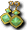
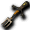

隨機彩券
隨機彩券
我們伺服器點兩下打開實際會得到的東西（照伺服器設定整理）。機率是「抽 1 個」時每一項的機會；「全部都給」的盒子沒有機率。
開法：照機率抽 1 個；背包要空 1 格。
| 物品 | 數量 | 機率 | 日版 wiki 介紹 |
 攻擊迴避率增強藥水 攻擊迴避率增強藥水 | 1 | 0.048% | |
 防禦增強藥水 防禦增強藥水 | 1 | 0.048% | |
 攻擊力增速藥水 攻擊力增速藥水 | 1 | 0.048% | |
 手提包 手提包 | 1 | 0.048% | 欄位8 手提包 出處：Item/道具/包包 |
 藥劑包 藥劑包 | 1 | 0.048% | |
 腰包 腰包 | 1 | 0.048% | 欄位6，腰包 出處：Item/道具/包包 |
| 旅行袋 | 1 | 0.048% | |
| 大背包 | 1 | 0.048% | |
| 高級腰包 | 1 | 0.048% | |
 發霉的麵包 發霉的麵包 | 1 | 0.048% | 恢復最大SP的10％ [堆疊數:30] 出處：Item/道具/恢復 |
 腐敗的水果 腐敗的水果 | 1 | 0.048% | |
 吟遊詩人之心 吟遊詩人之心 | 1 | 0.048% | 有意成為吟遊詩人的魔術師使用後可接取新任務 [堆疊數：1] Q:轉職 出處：Item/道具/任務 |
 卡普里科之鎚 卡普里科之鎚 | 1 | 0.048% | 攻擊力14～66、DAM+5、HIT-2、AAR-5 出處：Item/武器/鎚 |
 炸彈 炸彈 | 1 | 0.048% | 使用炸彈系技能時消耗 [堆疊數：99] 出處：Item/道具/輔助 |
| 煙霧彈 | 1 | 0.048% | |
| 智慧型炸彈 | 1 | 0.048% | |
| 智慧型工具包 | 1 | 0.048% | 使用智慧拆彈、智慧拆彈時消耗1個 [堆疊數：1] 出處：Item/道具/輔助 |
 強化藥水 強化藥水 | 1 | 0.048% | 10分鐘，能力All+5 堆疊數3 出處：Item/道具/輔助 |
 蟲蛀的蘋果 蟲蛀的蘋果 | 1 | 0.048% | |
 帕吉的袋子 帕吉的袋子 | 1 | 0.048% | |
| 一朵康乃馨 | 1 | 0.048% | |
 一束康乃馨 一束康乃馨 | 1 | 0.048% | |
 混合藥水 混合藥水 | 1 | 0.048% | |
| 公會混合藥水 | 1 | 0.048% | |
| 入神藥水 | 1 | 0.048% | |
| 增強威力藥水 | 1 | 0.048% | |
 魔王區入場券 魔王區入場券 | 1 | 0.048% | |
 迪斯火腿 迪斯火腿 | 1 | 0.048% | |
 雷鳴鼓(雙手) 雷鳴鼓(雙手) | 1 | 0.048% | |
| 地鳴鼓(雙手) | 1 | 0.048% | |
| 風鳴鼓(雙手) | 1 | 0.048% | |
| 破裂鼓(雙手) | 1 | 0.048% | |
| 碎魂鼓(雙手) | 1 | 0.048% | |
| 終結鼓(雙手) | 1 | 0.048% | |
 玄武之鼓(雙手) 玄武之鼓(雙手) | 1 | 0.048% | |
| 白虎之鼓(雙手) | 1 | 0.048% | |
| 青龍之鼓(雙手) | 1 | 0.048% | |
| 朱雀之鼓(雙手) | 1 | 0.048% | |
 祝福之卷[商] 祝福之卷[商] | 1 | 0.048% | |
| 詛咒之卷[商] | 1 | 0.048% | |
 強化之卷[商] 強化之卷[商] | 1 | 0.048% | |
 獸人腳鍊 獸人腳鍊 | 1 | 0.048% | |
 依洛腳鍊 依洛腳鍊 | 1 | 0.048% | |
| 衝擊腳鍊 | 1 | 0.048% | |
 疾馳腳鍊 疾馳腳鍊 | 1 | 0.048% | |
 泰坦腳鍊 泰坦腳鍊 | 1 | 0.048% | |
| 獸人腳鐲 | 1 | 0.048% | |
| 依洛腳鐲 | 1 | 0.048% | |
| 衝擊腳鐲 | 1 | 0.048% | |
| 疾馳腳鐲 | 1 | 0.048% | |
| 泰坦腳鐲 | 1 | 0.048% | |
| 獸人腳環 | 1 | 0.048% | |
| 依洛腳環 | 1 | 0.048% | |
| 衝擊腳環 | 1 | 0.048% | |
| 疾馳腳環 | 1 | 0.048% | |
| 泰坦腳環 | 1 | 0.048% | |
| 獸人腿鐲 | 1 | 0.048% | |
| 依洛腿鐲 | 1 | 0.048% | |
| 衝擊腿鐲 | 1 | 0.048% | |
| 疾馳腿鐲 | 1 | 0.048% | |
| 泰坦腿鐲 | 1 | 0.048% | |
| 獸人腿環 | 1 | 0.048% | |
| 依洛腿環 | 1 | 0.048% | |
| 衝擊腿環 | 1 | 0.048% | |
| 疾馳腿環 | 1 | 0.048% | |
| 泰坦腿環 | 1 | 0.048% | |
| 茄子 | 1 | 0.048% | 恢復最大MP的10％ [堆疊數:30] 出處：Item/道具/恢復 |
 桑丘吉他 桑丘吉他 | 1 | 0.048% | 攻12～13 出處：Item/武器/吉他 |
 貝斯吉他(雙手) 貝斯吉他(雙手) | 1 | 0.048% | |
| 搖滾吉他(雙手) | 1 | 0.048% | |
| 霹靂吉他(雙手) | 1 | 0.048% | |
 梅爾吉他(雙手) 梅爾吉他(雙手) | 1 | 0.048% | |
| 高斯吉他(雙手) | 1 | 0.048% | |
| 霓虹吉他(雙手) | 1 | 0.048% | |
 風之吉他(雙手) 風之吉他(雙手) | 1 | 0.048% | |
| 地之吉他(雙手) | 1 | 0.048% | |
| 水之吉他(雙手) | 1 | 0.048% | |
| 火之吉他(雙手) | 1 | 0.048% | |
 命中率增強藥水 命中率增強藥水 | 1 | 0.048% | |
 生命增強藥水 生命增強藥水 | 1 | 0.048% | |
 天使豎琴(雙手) 天使豎琴(雙手) | 1 | 0.048% | |
| 魔法豎琴(雙手) | 1 | 0.048% | |
| 精靈豎琴(雙手) | 1 | 0.048% | |
 和諧豎琴(雙手) 和諧豎琴(雙手) | 1 | 0.048% | |
| 安寧豎琴(雙手) | 1 | 0.048% | |
| 昏睡豎琴(雙手) | 1 | 0.048% | |
 風之豎琴(雙手) 風之豎琴(雙手) | 1 | 0.048% | |
| 地之豎琴(雙手) | 1 | 0.048% | |
| 水之豎琴(雙手) | 1 | 0.048% | |
| 火之豎琴(雙手) | 1 | 0.048% | |
 黑斯魔石(雙手) 黑斯魔石(雙手) | 1 | 0.048% | |
| 卡斯魔石(雙手) | 1 | 0.048% | |
| 夏斯魔石(雙手) | 1 | 0.048% | |
| 羅斯魔石(雙手) | 1 | 0.048% | |
| 帕斯魔石(雙手) | 1 | 0.048% | |
 哥布林培根 哥布林培根 | 1 | 0.048% | |
| 哥布林火腿 | 1 | 0.048% | |
 王者之冠 王者之冠 | 1 | 0.048% | |
| 權利之冠 | 1 | 0.048% | |
| 地位之冠 | 1 | 0.048% | |
| 世界王者之冠 | 1 | 0.048% | |
 女王之冠 女王之冠 | 1 | 0.048% | |
| 王妃之冠 | 1 | 0.048% | |
| 女神之冠 | 1 | 0.048% | |
| 世界之冠 | 1 | 0.048% | |
| 騎士之心 | 1 | 0.048% | 有意成為騎士的戰士使用後可接取新任務 [堆疊數：1] Q:轉職 出處：Item/道具/任務 |
 波波之槍 波波之槍 | 1 | 0.048% | 攻40～70、AC-3、MC-3、HIT+8 單手槍 出處：Item/武器/槍 |
 德羅伊坎長槍 德羅伊坎長槍 | 1 | 0.048% | 攻60-160 海馬騎士持有的大型長槍 出處：Item/武器/雙手槍 |
 銀光之槍(雙手) 銀光之槍(雙手) | 1 | 0.048% | |
| 蛇之槍(雙手) | 1 | 0.048% | |
| 精靈之槍(雙手) | 1 | 0.048% | |
| 月光之槍(雙手) | 1 | 0.048% | |
| 莿脊之槍(雙手) | 1 | 0.048% | |
 火之槍(雙手) 火之槍(雙手) | 1 | 0.048% | |
| 地之槍(雙手) | 1 | 0.048% | |
| 風之槍(雙手) | 1 | 0.048% | |
| 水之槍(雙手) | 1 | 0.048% | |
| 元素之槍(雙手) | 1 | 0.048% | |
 毀滅之柱(雙手) 毀滅之柱(雙手) | 1 | 0.048% | |
| 雷神之怒(雙手) | 1 | 0.048% | |
| 龍之槍(雙手) | 1 | 0.048% | |
| 天界之槍(雙手) | 1 | 0.048% | |
| 神滅之槍(雙手) | 1 | 0.048% | |
 生命之泉 生命之泉 | 1 | 0.048% | |
| 赫爾莉克夏（路爾斯產） | 1 | 0.048% | |
| 赫爾莉克夏（特價） | 1 | 0.048% | |
| 赫爾莉克夏 | 1 | 0.048% | HP+500 [堆疊數:20] 出處：Item/道具/恢復 |
 赫爾莉克夏T 赫爾莉克夏T | 1 | 0.048% | HP+500 [堆疊數:10] 出處：Item/道具/恢復 |
| 赫爾莉克夏U | 1 | 0.048% | |
 魔力之泉 魔力之泉 | 1 | 0.048% | |
| 瑪娜莉克夏（斯歐米產） | 1 | 0.048% | |
| 瑪娜莉克夏（特價） | 1 | 0.048% | |
| 瑪娜莉克夏 | 1 | 0.048% | MP+500 [堆疊數:20] 出處：Item/道具/恢復 |
 瑪娜莉克夏T 瑪娜莉克夏T | 1 | 0.048% | MP+500 [堆疊數:10] 出處：Item/道具/恢復 |
| 瑪娜莉克夏U | 1 | 0.048% | |
 超級技能之水 超級技能之水 | 1 | 0.048% | |
| 史黛莉克夏（米魯里斯產） | 1 | 0.048% | |
| 史黛莉克夏（特價） | 1 | 0.048% | |
| 史黛莉克夏 | 1 | 0.048% | SP+500 [堆疊數:20] 出處：Item/道具/恢復 |
 史黛莉克夏T 史黛莉克夏T | 1 | 0.048% | SP+500 [堆疊數:10] 出處：Item/道具/恢復 |
| 史黛莉克夏U | 1 | 0.048% | SP+500 [堆疊數:] 可對其他使用者使用 出處：Item/道具/恢復 |
| 惡魔島入場券 | 1 | 0.048% | 前往海盜要塞地城的票券。需要FLv 20。 [堆疊數：5] 出處：Item/道具/移動 |
| 魔防增強藥水 | 1 | 0.048% | MC-8、持續時間：120秒 出處：Item/道具/輔助 |
| 魔力增強藥水 | 1 | 0.048% | MP+200、持續時間150秒 出處：Item/道具/輔助 |
 魔瓜水 魔瓜水 | 1 | 0.048% | |
 燒肉火柴 燒肉火柴 | 1 | 0.048% | 能讓怪物活生生被燒死的魔法火焰火柴。使用一次就會消失。 [堆疊數：40] 出處：Item/道具/其他 |
 超級生命之水 超級生命之水 | 1 | 0.048% | |
| 赫爾莉克（路爾斯產） | 1 | 0.048% | |
| 赫爾莉克（特價） | 1 | 0.048% | |
| 赫爾莉克 | 1 | 0.048% | HP+200 [堆疊數:50] 出處：Item/道具/恢復 |
| 赫爾莉克T | 1 | 0.048% | HP+200 [堆疊數:99] 出處：Item/道具/恢復 |
| 赫爾莉克U | 1 | 0.048% | HP+200 [堆疊數:30] 可對其他使用者使用 出處：Item/道具/恢復 |
 超級魔力之水 超級魔力之水 | 1 | 0.048% | |
| 瑪娜莉克（斯歐米產） | 1 | 0.048% | |
| 瑪娜莉克（特價） | 1 | 0.048% | |
| 瑪娜莉克 | 1 | 0.048% | MP+200 [堆疊數:50] 出處：Item/道具/恢復 |
| 瑪娜莉克T | 1 | 0.048% | MP+200 [堆疊數:99] 出處：Item/道具/恢復 |
| 瑪娜莉克U | 1 | 0.048% | MP+200 [堆疊數:] 可對其他使用者使用 出處：Item/道具/恢復 |
 [109]小烏鵝變身捲軸 [109]小烏鵝變身捲軸 | 1 | 0.048% | |
 特製魔斯果汁 特製魔斯果汁 | 1 | 0.048% | 每3秒恢復HP/MP/SP各20％。持續5分鐘。偶爾會混亂。利用摩斯針製成的特製果汁。雖然會湧現活力，但總覺得越來越舒服……!? 出處：Item/道具/輔助 |
| 魔斯酒 | 1 | 0.048% | |
| 超光速藥水 | 1 | 0.048% | |
| 光速藥水 | 1 | 0.048% | |
| 音速藥水 | 1 | 0.048% | |
| 高速藥水 | 1 | 0.048% | |
 強力技能之水 強力技能之水 | 1 | 0.048% | |
| 史黛莉克（米魯里斯產） | 1 | 0.048% | |
| 史黛莉克（特價） | 1 | 0.048% | |
| 史黛莉克 | 1 | 0.048% | SP+200 [堆疊數:50] 出處：Item/道具/恢復 |
| 史黛莉克T | 1 | 0.048% | SP+200 [堆疊數:30] 出處：Item/道具/恢復 |
| 史黛莉克U | 1 | 0.048% | SP+200 [堆疊數:] 可對其他使用者使用 出處：Item/道具/恢復 |
| 悼念的菊花 | 1 | 0.048% | |
| 體質藥水 | 1 | 0.048% | |
| 地之護符 | 1 | 0.048% | |
 熾燄之鍊 熾燄之鍊 | 1 | 0.048% | |
 虛無之鍊 虛無之鍊 | 1 | 0.048% | |
 空間之鍊 空間之鍊 | 1 | 0.048% | |
| 三女神之鍊 | 1 | 0.048% | |
| 宇環之鍊 | 1 | 0.048% | |
 虛擬之鍊 虛擬之鍊 | 1 | 0.048% | |
 水之護符 水之護符 | 1 | 0.048% | |
| 淚之護符 | 1 | 0.048% | |
 春雨之鍊 春雨之鍊 | 1 | 0.048% | |
| 喝采之鍊 | 1 | 0.048% | |
 土壤之鍊 土壤之鍊 | 1 | 0.048% | |
| 水龍之鍊 | 1 | 0.048% | |
| 風之護符 | 1 | 0.048% | |
| 真空護符 | 1 | 0.048% | |
 微風護符 微風護符 | 1 | 0.048% | |
 狂風護符 狂風護符 | 1 | 0.048% | |
 呢喃之鍊 呢喃之鍊 | 1 | 0.048% | |
 大地護符 大地護符 | 1 | 0.048% | |
| 怒吼之鍊 | 1 | 0.048% | |
 蓬勃之鍊 蓬勃之鍊 | 1 | 0.048% | |
 火之護符 火之護符 | 1 | 0.048% | |
 閃耀之鍊 閃耀之鍊 | 1 | 0.048% | |
 燎炎之鍊 燎炎之鍊 | 1 | 0.048% | |
| 火燄之鍊 | 1 | 0.048% | |
| 死靈杖(雙手) | 1 | 0.048% | |
 死靈杖(雙手) 死靈杖(雙手) | 1 | 0.048% | |
| 亡魂之杖(雙手) | 1 | 0.048% | |
| 亡靈之杖(雙手) | 1 | 0.048% | |
| 哀號之杖(雙手) | 1 | 0.048% | |
| 凋零之杖(雙手) | 1 | 0.048% | |
| 諾肯藥劑袋 | 1 | 0.048% | |
| 諾肯培根 | 1 | 0.048% | |
| 波波之盾 | 1 | 0.048% | AC-7 MC-3 盾，波波使用的盾 出處：Item/防具/盾 |
| 健康棒 | 1 | 0.048% | 效果:恢復HP500(守護專用) [堆疊數：50] 出處：Item/道具/守護動物 |
| 健康棒 | 1 | 0.048% | 效果:恢復HP500(守護專用) [堆疊數：50] 出處：Item/道具/守護動物 |
| 魔力棒 | 1 | 0.048% | 效果:恢復MP200(守護專用) [堆疊數：50] 出處：Item/道具/守護動物 |
| 魔力棒 | 1 | 0.048% | 效果:恢復MP200(守護專用) [堆疊數：50] 出處：Item/道具/守護動物 |
| 生命之露 | 1 | 0.048% | 效果:恢復HP100(守護專用) [堆疊數：99] 出處：Item/道具/守護動物 |
| 生命之露 | 1 | 0.048% | 效果:恢復HP100(守護專用) [堆疊數：99] 出處：Item/道具/守護動物 |
| 魔法之露 | 1 | 0.048% | 效果:恢復MP50(守護專用) [堆疊數：99] 出處：Item/道具/守護動物 |
| 魔法之露 | 1 | 0.048% | 效果:恢復MP50(守護專用) [堆疊數：99] 出處：Item/道具/守護動物 |
 晨光之器 晨光之器 | 1 | 0.048% | |
| 星光之器 | 1 | 0.048% | |
 月光之器 月光之器 | 1 | 0.048% | |
 晨光之盔 晨光之盔 | 1 | 0.048% | |
| 星光之盔 | 1 | 0.048% | |
| 月光之盔 | 1 | 0.048% | |
 晨光之甲 晨光之甲 | 1 | 0.048% | |
 星光之甲 星光之甲 | 1 | 0.048% | |
| 月光之甲 | 1 | 0.048% | |
 晨光之鍊2 晨光之鍊2 | 1 | 0.048% | |
 星光之鍊2 星光之鍊2 | 1 | 0.048% | |
| 月光之鍊2 | 1 | 0.048% | |
| 晨光之戒 | 1 | 0.048% | |
| 晨光之環 | 1 | 0.048% | |
 星光之戒 星光之戒 | 1 | 0.048% | |
| 星光之環 | 1 | 0.048% | |
 月光之戒 月光之戒 | 1 | 0.048% | |
| 月光之環 | 1 | 0.048% | |
 業報指虎 業報指虎 | 1 | 0.048% | 攻65～70、STR+8 出處：Item/武器/指虎 |
 卡繆腰帶 卡繆腰帶 | 1 | 0.048% | 不死屬性防禦 DAM+15 Crash 欄位1 屬性腰帶，寄宿死靈咒法的禁忌腰帶。死亡時會消失。對人戰方面，在攻城戰或競技場等只是被傳送走的話不會消失，但在地城混戰或阿克羅尼斯等變成墓碑時似乎會消失。戰鬥對戰中即使變成墓碑也不會消失。 出處：Item/防具/腰帶 |
 魔法之壁 魔法之壁 | 1 | 0.048% | |
 復活藥水 復活藥水 | 1 | 0.048% | |
| 寵物復活藥水 | 1 | 0.048% | |
 回憶之書(單人) 回憶之書(單人) | 1 | 0.048% | |
 回憶之石(單人) 回憶之石(單人) | 1 | 0.048% | |
| 一朵玫瑰 | 1 | 0.048% | |
 一束玫瑰 一束玫瑰 | 1 | 0.048% | 送給所愛之人的禮物(高級) 出處：Item/道具/其他 |
 魔法迴避率增強藥水 魔法迴避率增強藥水 | 1 | 0.048% | |
 技能增強藥水 技能增強藥水 | 1 | 0.048% | |
| 森巴T恤 | 1 | 0.048% | |
| 強力生命之水 | 1 | 0.048% | |
| 赫爾莉洛（路爾斯產） | 1 | 0.048% | |
| 赫爾莉洛（特價） | 1 | 0.048% | |
| 赫爾莉洛 | 1 | 0.048% | HP+100 [堆疊數:80] 出處：Item/道具/恢復 |
| 赫爾莉洛T | 1 | 0.048% | HP+100 [堆疊數:99] 出處：Item/道具/恢復 |
| 赫爾莉洛U | 1 | 0.048% | HP+100 [堆疊數:] 可對其他使用者使用 出處：Item/道具/恢復 |
| 強力魔力之水 | 1 | 0.048% | |
| 瑪娜莉洛（斯歐米產） | 1 | 0.048% | |
| 瑪娜莉洛（特價） | 1 | 0.048% | |
| 瑪娜莉洛 | 1 | 0.048% | MP+100 [堆疊數:80] 出處：Item/道具/恢復 |
| 瑪娜莉洛T | 1 | 0.048% | MP+100 [堆疊數:99] 出處：Item/道具/恢復 |
| 瑪娜莉洛U | 1 | 0.048% | MP+100 [堆疊數:] 可對其他使用者使用 出處：Item/道具/恢復 |
| 鐵匠之鎚 | 1 | 0.048% | 攻34～46 出處：Item/武器/鎚 |
| XX衣 | 1 | 0.048% | |
| 技能之水 | 1 | 0.048% | |
| 史黛莉洛（米魯里斯產） | 1 | 0.048% | |
| 史黛莉洛（特價） | 1 | 0.048% | |
| 史黛莉洛 | 1 | 0.048% | SP+100 [堆疊數:80] 出處：Item/道具/恢復 |
| 史黛莉洛T | 1 | 0.048% | SP+100 [堆疊數:50] 出處：Item/道具/恢復 |
| 史黛莉洛U | 1 | 0.048% | SP+100 [堆疊數:] 可對其他使用者使用 出處：Item/道具/恢復 |
| 天翼之風 | 1 | 0.048% | |
 童話車票[愛麗絲區] 童話車票[愛麗絲區] | 1 | 0.048% | |
| 童話車票[格烈佛區] | 1 | 0.048% | |
| 童話車票[胡桃鉗區] | 1 | 0.048% | |
| 童話車票[石化區] | 1 | 0.048% | |
| 燕尾服 | 1 | 0.048% | 結婚時必須穿著 婚禮服 出處：Item/身體防具/男其他 |
 黃色夏威夷裝 黃色夏威夷裝 | 1 | 0.048% | |
| 粉紅夏威夷裝 | 1 | 0.048% | |
| 青藍夏威夷裝 | 1 | 0.048% | |
| 黑色夏威夷裝 | 1 | 0.048% | |
| 灰色夏威夷裝 | 1 | 0.048% | |
| 綠色夏威夷裝 | 1 | 0.048% | |
| 藍色夏威夷裝 | 1 | 0.048% | |
| 橘色夏威夷裝 | 1 | 0.048% | |
| 紫色夏威夷裝 | 1 | 0.048% | |
| 深藍夏威夷裝 | 1 | 0.048% | |
| 棕色夏威夷裝 | 1 | 0.048% | |
| 朱色夏威夷裝 | 1 | 0.048% | |
| 深紅夏威夷裝 | 1 | 0.048% | |
 晚禮服 晚禮服 | 1 | 0.048% | |
 灰色比基尼裝 灰色比基尼裝 | 1 | 0.048% | |
| 淺藍比基尼裝 | 1 | 0.048% | |
| 粉紅比基尼裝 | 1 | 0.048% | |
| 黑色比基尼裝 | 1 | 0.048% | |
| 白色比基尼裝 | 1 | 0.048% | |
| 朱色比基尼裝 | 1 | 0.048% | |
| 淺朱比基尼裝 | 1 | 0.048% | |
| 靛藍比基尼裝 | 1 | 0.048% | |
| 棕色比基尼裝 | 1 | 0.048% | |
| 紫色比基尼裝 | 1 | 0.048% | |
| 綠色比基尼裝 | 1 | 0.048% | |
| 黃色比基尼裝 | 1 | 0.048% | |
| 深紅比基尼裝 | 1 | 0.048% | |
 蛇鞭(雙手) 蛇鞭(雙手) | 1 | 0.048% | |
| 皮鞭(雙手) | 1 | 0.048% | |
| 女王鞭(雙手) | 1 | 0.048% | |
| 莎法娜之鞭(雙手) | 1 | 0.048% | |
| 皮波鞭(雙手) | 1 | 0.048% | |
| 修練用長鞭 | 1 | 0.048% | |
| 青蘋果 | 1 | 0.048% | |
 生意許可書 生意許可書 | 1 | 0.048% | |
| 蘋果酒 | 1 | 0.048% | 蒸餾蘋果製成的酒。酸味很強，無法直接飲用。可作為藥品和料理的材料。 出處：Item/道具/製藥 |
 鋁塊 鋁塊 | 1 | 0.048% | |
 鋁礦 鋁礦 | 1 | 0.048% | 生產材料。照這樣雜質很多，不精煉就無法使用。 出處：Item/道具/寶石 |
| 龍涎香 | 1 | 0.048% | |
 紫水晶 紫水晶 | 1 | 0.048% | 寶石。用於製作極限武器的附魔捲軸。 Q:極限武器 出處：Item/道具/寶石 |
| 新鮮的蘋果 | 1 | 0.048% | |
 石斧 石斧 | 1 | 0.048% | 攻1～31 單手斧 出處：Item/武器/斧 |
 闊斧 闊斧 | 1 | 0.048% | |
 鐵斧 鐵斧 | 1 | 0.048% | 攻22～102、DAM+2、HIT-5 單手斧 鐵製的大斧。難以使用但威力絕大 出處：Item/武器/斧 |
 巨斧 巨斧 | 1 | 0.048% | 攻20～260、DAM+5、HIT-15 雙手斧 以沉重鐵打造的巨大斧頭 出處：Item/武器/斧 |
 重型斧 重型斧 | 1 | 0.048% | |
| 零星之斧 | 1 | 0.048% | |
| 幸運之斧 | 1 | 0.048% | |
| 祝福之斧 | 1 | 0.048% | |
| 希望之斧 | 1 | 0.048% | |
| 修練用斧頭 | 1 | 0.048% | 戰士訓練時使用的斧。沒有經過提升能力的加工 出處：Item/武器/斧 |
 亞茲魔驚奇箱 亞茲魔驚奇箱 | 1 | 0.048% | |
| 培根 | 1 | 0.048% | 恢復最大HP的10％ [堆疊數:30] 出處：Item/道具/恢復 |
| 武裝之戒 | 1 | 0.048% | |
| 魔法之戒 | 1 | 0.048% | |
| 蛇行之戒 | 1 | 0.048% | |
 皮帶 皮帶 | 1 | 0.048% | |
 魔法皮帶 魔法皮帶 | 1 | 0.048% | |
| 魔法環扣腰帶 | 1 | 0.048% | |
 魔法腰帶 魔法腰帶 | 1 | 0.048% | |
 魔法重皮帶 魔法重皮帶 | 1 | 0.048% | |
| 環扣腰帶 | 1 | 0.048% | |
 火之皮帶 火之皮帶 | 1 | 0.048% | |
| 水之皮帶 | 1 | 0.048% | |
 風之皮帶 風之皮帶 | 1 | 0.048% | |
 地之皮帶 地之皮帶 | 1 | 0.048% | |
| 火之環扣腰帶 | 1 | 0.048% | |
| 水之環扣腰帶 | 1 | 0.048% | |
| 風之環扣腰帶 | 1 | 0.048% | |
| 腰帶 | 1 | 0.048% | AC-1 欄位2 腰帶 出處：Item/防具/腰帶 |
| 地之環扣腰帶 | 1 | 0.048% | |
| 火之腰帶 | 1 | 0.048% | |
| 水之腰帶 | 1 | 0.048% | |
| 風之腰帶 | 1 | 0.048% | |
 地之腰帶 地之腰帶 | 1 | 0.048% | |
| 神聖之腰帶 | 1 | 0.048% | |
 黑暗之腰帶 黑暗之腰帶 | 1 | 0.048% | |
| 火之重皮帶 | 1 | 0.048% | |
| 重皮帶 | 1 | 0.048% | AC-4 欄位5 腰帶 出處：Item/防具/腰帶 |
| 水之重皮帶 | 1 | 0.048% | |
| 風之重皮帶 | 1 | 0.048% | |
| 地之重皮帶 | 1 | 0.048% | |
 祖母綠 祖母綠 | 1 | 0.048% | 寶石。用於製作極限武器的附魔捲軸。 Q:極限武器 出處：Item/道具/寶石 |
 巨石花 巨石花 | 1 | 0.048% | 古代人的數字5 [堆疊數：99] Q:古代人的數字-記號 出處：Item/道具/任務 |
 巨石牙 巨石牙 | 1 | 0.048% | |
 黑珍珠 黑珍珠 | 1 | 0.048% | 寶石。用於製作極限武器的附魔捲軸。 Q:極限武器 出處：Item/道具/寶石 |
 庇祐之杖(雙手) 庇祐之杖(雙手) | 1 | 0.048% | |
 血 血 | 1 | 0.048% | 保存起來的野獸鮮血。是怪物的最愛。可作為藥品和料理的材料。 [堆疊數：99] 出處：Item/道具/製藥 |
 血石 血石 | 1 | 0.048% | 寶石。用於製作極限武器的附魔捲軸。 Q:極限武器 出處：Item/道具/寶石 |
 骨頭 骨頭 | 1 | 0.048% | 平凡無奇的白骨 [堆疊數：20] Q:皮塔的遺骨 出處：Item/道具/任務 |
| 彼特的骨骸 | 1 | 0.048% | |
 恢復速度藥水 恢復速度藥水 | 1 | 0.048% | |
 鞋 鞋 | 1 | 0.048% | |
 布鞋 布鞋 | 1 | 0.048% | |
| 黃金靴 | 1 | 0.048% | |
 皮鞋 皮鞋 | 1 | 0.048% | AC-5 DEX+8 出處：Item/防具/鞋 |
 皮靴 皮靴 | 1 | 0.048% | |
 長筒護靴 長筒護靴 | 1 | 0.048% | |
 鞋子5 鞋子5 | 1 | 0.048% | |
 鞋子6 鞋子6 | 1 | 0.048% | |
 鞋子7 鞋子7 | 1 | 0.048% | |
| 瓶子 | 1 | 0.048% | 空瓶。除了可裝入各種材料製作藥瓶外，也能當作燒瓶使用 [堆疊數：99] 出處：Item/道具/製藥 |
| 環鐲 | 1 | 0.048% | |
| 臂鐲 | 1 | 0.048% | |
 鯊魚腕鐲 鯊魚腕鐲 | 1 | 0.048% | |
| 啪啦啪啦手環 | 1 | 0.048% | |
 刺茅之冑 刺茅之冑 | 1 | 0.048% | |
 金蟬之腹 金蟬之腹 | 1 | 0.048% | |
 白鐵鐲 白鐵鐲 | 1 | 0.048% | |
| 金蛇腕鐲 | 1 | 0.048% | |
 龍鱗之冑 龍鱗之冑 | 1 | 0.048% | |
| 金蟬之腹1 | 1 | 0.048% | |
 黃金鐲 黃金鐲 | 1 | 0.048% | |
 白金鐲 白金鐲 | 1 | 0.048% | |
| 白鐵腕鐲 | 1 | 0.048% | |
| 黃金腕鐲 | 1 | 0.048% | |
| 野獸腕鐲 | 1 | 0.048% | |
| 回歸之鐲 | 1 | 0.048% | |
| 猛烈之鐲 | 1 | 0.048% | |
 黃銅合金 黃銅合金 | 1 | 0.048% | |
| 麵包 | 1 | 0.048% | 恢復最大SP的30％ [堆疊數:30] 出處：Item/道具/恢復 |
 青銅合金 青銅合金 | 1 | 0.048% | |
 歌者之服 歌者之服 | 1 | 0.048% | |
 表演之服 表演之服 | 1 | 0.048% | |
| 搞笑之服 | 1 | 0.048% | |
| 冒險者之服 | 1 | 0.048% | |
| 傳說之服 | 1 | 0.048% | |
 華麗歌者服 華麗歌者服 | 1 | 0.048% | |
| 熙德之服 | 1 | 0.048% | |
| 戴布蘭特之服 | 1 | 0.048% | |
| 戴布蘭特之形 | 1 | 0.048% | AC-11 出處：Item/身體防具/男吟遊詩人 |
 炫麗歌者服 炫麗歌者服 | 1 | 0.048% | |
 燦爛歌手服 燦爛歌手服 | 1 | 0.048% | |
 巨星歌手服 巨星歌手服 | 1 | 0.048% | |
| 門徒之服 | 1 | 0.048% | |
| 地之大師之服 | 1 | 0.048% | |
| 行吟詩人之服 | 1 | 0.048% | |
| 尼伯龍根之服 | 1 | 0.048% | |
| 木棒 | 1 | 0.048% | 效果： Q:極限武器 出處：Item/道具/任務 |
 狼牙棒 狼牙棒 | 1 | 0.048% | |
 白麻石 白麻石 | 1 | 0.048% | |
 橄欖石 橄欖石 | 1 | 0.048% | |
 玉髓石 玉髓石 | 1 | 0.048% | 寶石。用於製作極限武器的附魔捲軸。 Q:極限武器 出處：Item/道具/寶石 |
| 解毒劑 | 1 | 0.048% | 給孩子們的解毒劑 Q:依卡魯斯的孩子們-2、[不可放置地面] 出處：Item/道具/任務 |
| 體質藥水 | 1 | 0.048% | |
| 體質藥水 | 1 | 0.048% | |
 銅合金 銅合金 | 1 | 0.048% | |
| 銅塊 | 1 | 0.048% | 生產材料。由銅礦精煉而成的金屬條。 出處：Item/道具/寶石 |
 銅礦 銅礦 | 1 | 0.048% | 生產材料。照這樣雜質很多，不精煉就無法使用。 出處：Item/道具/寶石 |
 助祭之袍 助祭之袍 | 1 | 0.048% | |
| 神佑助祭之袍 | 1 | 0.048% | |
 神佑執事之袍 神佑執事之袍 | 1 | 0.048% | |
 神佑修士服 神佑修士服 | 1 | 0.048% | |
 神佑牧師服 神佑牧師服 | 1 | 0.048% | |
| 長老神職者之魂 | 1 | 0.048% | AC-5、HP+100、MP+100 出處：Item/身體防具/男聖職者 |
 神佑主事之袍 神佑主事之袍 | 1 | 0.048% | |
| 神佑監督之袍 | 1 | 0.048% | |
| 執事之袍 | 1 | 0.048% | |
| 修士服 | 1 | 0.048% | |
| 牧師服 | 1 | 0.048% | |
| 主事之袍 | 1 | 0.048% | |
| 監督之袍 | 1 | 0.048% | |
 光之賢者服 光之賢者服 | 1 | 0.048% | |
 亞銅合金 亞銅合金 | 1 | 0.048% | |
 切割小刀 切割小刀 | 1 | 0.048% | |
 南瓜短刀 南瓜短刀 | 1 | 0.048% | |
| 木製小刀 | 1 | 0.048% | |
 小刀 小刀 | 1 | 0.048% | |
 短刀 短刀 | 1 | 0.048% | 攻18～20 出處：Item/武器/匕首 |
 背刺小刀 背刺小刀 | 1 | 0.048% | |
 背刺彎刀 背刺彎刀 | 1 | 0.048% | |
 突刺小刀 突刺小刀 | 1 | 0.048% | |
| 零星小刀 | 1 | 0.048% | |
| 幸運小刀 | 1 | 0.048% | |
| 祝福小刀 | 1 | 0.048% | |
| 希望小刀 | 1 | 0.048% | |
| 冠軍小刀 | 1 | 0.048% | |
| 祕儀小刀 | 1 | 0.048% | |
| 採集用小刀 | 1 | 0.048% | 用來把怪物的肉加工成食材的小刀。已向聖職者協會申請特別攜帶許可。 出處：Item/道具/其他 |
| 修練用短刀 | 1 | 0.048% | |
| 狼毛布鞋 | 1 | 0.048% | |
| 鎮靜劑 | 1 | 0.048% | 調配任務中製作的藥。具有吸收熱量的效果。 [不可轉讓][不可放置地面] 出處：Item/道具/進階自由任務 |
| 敏捷藥水 | 1 | 0.048% | DEX+5、持續時間120秒 出處：Item/道具/輔助 |
 鑽石 鑽石 | 1 | 0.048% | 寶石。用於製作極限武器的附魔捲軸。 Q:極限武器 出處：Item/道具/寶石 |
 骰子 骰子 | 1 | 0.048% | 隨機顯示1～6的數字。一次性道具 [堆疊數：99] 出處：Item/道具/其他 |
 迪斯湯 迪斯湯 | 1 | 0.048% | 迪斯熱水袋的材料 Q:迪斯熱水的功效、製藥材料 出處：Item/道具/任務 |
| 迪斯湯包 | 1 | 0.048% | |
 迪斯眼球 迪斯眼球 | 1 | 0.048% | |
| 修練用鼓 | 1 | 0.048% | |
| 染色劑[？] | 1 | 0.048% | |
| 染色劑[？] | 1 | 0.048% | |
| 染色劑[帥帥的草綠] | 1 | 0.048% | |
| 染色劑[帥帥的橘色] | 1 | 0.048% | |
| 染色劑[青蘋果色] | 1 | 0.048% | |
| 染色劑[流行的紫色] | 1 | 0.048% | |
| 染色劑[？] | 1 | 0.048% | |
 染色劑[帥帥的紅色] 染色劑[帥帥的紅色] | 1 | 0.048% | |
 染色劑[發亮的綠色] 染色劑[發亮的綠色] | 1 | 0.048% | |
| 染色劑[？] | 1 | 0.048% | |
 染色劑[流行的藍色] 染色劑[流行的藍色] | 1 | 0.048% | |
| 染色劑[黑色] | 1 | 0.048% | |
| 染色劑[強力漂白] | 1 | 0.048% | |
| 染色劑[栗子棕] | 1 | 0.048% | |
| 染色劑[白金色] | 1 | 0.048% | |
| 染色劑[褐色] | 1 | 0.048% | |
| 染色劑[黑色] | 1 | 0.048% | |
| 特殊染色劑[漂亮的草綠色] | 1 | 0.048% | |
| 特殊染色劑[漂亮的紫色] | 1 | 0.048% | |
| 特殊染色劑[漂亮的紅色] | 1 | 0.048% | |
| 特殊染色劑[漂亮的藍色] | 1 | 0.048% | |
| 特殊染色劑[帥帥的藍色] | 1 | 0.048% | |
| 染色劑[紅色] | 1 | 0.048% | |
| 染色劑[淡藍] | 1 | 0.048% | |
| 染色劑[淡青] | 1 | 0.048% | |
| 染色劑[粉紅] | 1 | 0.048% | |
| 染色劑[金色] | 1 | 0.048% | |
| 染色劑[銀色] | 1 | 0.048% | |
| 染色劑[朱黃] | 1 | 0.048% | |
| 染色劑[綠色] | 1 | 0.048% | |
| 染色劑[淡綠色] | 1 | 0.048% | |
| 染色劑[淡褐色] | 1 | 0.048% | |
| 染色劑[隨機] | 1 | 0.048% | |
 玉石耳環 玉石耳環 | 1 | 0.048% | |
| 武裝耳環 | 1 | 0.048% | |
 魔法耳環 魔法耳環 | 1 | 0.048% | |
 蛇行耳環 蛇行耳環 | 1 | 0.048% | |
 春雨耳環 春雨耳環 | 1 | 0.048% | |
| 微風耳環 | 1 | 0.048% | |
| 合金耳環 | 1 | 0.048% | |
 炫光耳環 炫光耳環 | 1 | 0.048% | |
| 豎琴耳環 | 1 | 0.048% | |
| 神授耳環 | 1 | 0.048% | |
 綠寶石 綠寶石 | 1 | 0.048% | |
| 亞鐵合金 | 1 | 0.048% | |
| 金塊 | 1 | 0.048% | 貴重的黃金條。很重但能賣高價 出處：Item/道具/寶石 |
| 彩券 | 1 | 0.048% | 會出什麼要看運氣・・・ 出處：Item/道具/其他 |
| 福袋 | 1 | 0.048% | 活動品 雙擊使用看看吧！・・・ 出處：Item/道具/其他 |
| 眼球 | 1 | 0.048% | |
 武士皮甲？ 武士皮甲？ | 1 | 0.048% | |
 修女服？ 修女服？ | 1 | 0.048% | 可以體驗聖職者心情的衣服 出處：Item/身體防具/女其他 |
 聖潔騎士甲？ 聖潔騎士甲？ | 1 | 0.048% | 可以體驗騎士心情的衣服 出處：Item/身體防具/男其他 |
 聖潔女騎士甲？ 聖潔女騎士甲？ | 1 | 0.048% | 可以體驗騎士心情的衣服 出處：Item/身體防具/女其他 |
| 傳說之服？ | 1 | 0.048% | 可以體驗吟遊詩人心情的衣服 出處：Item/身體防具/男其他 |
 傳說之女服？ 傳說之女服？ | 1 | 0.048% | 可以體驗吟遊詩人心情的衣服 出處：Item/身體防具/女其他 |
 女武士皮甲？ 女武士皮甲？ | 1 | 0.048% | 可以體驗戰士心情的衣服 出處：Item/身體防具/女其他 |
 偵察服？ 偵察服？ | 1 | 0.048% | 可以體驗盜賊心情的衣服 出處：Item/身體防具/男其他 |
 女偵察服？ 女偵察服？ | 1 | 0.048% | 可以體驗盜賊心情的衣服 出處：Item/身體防具/女其他 |
 拳法裝？ 拳法裝？ | 1 | 0.048% | 可以體驗修道士心情的衣服 出處：Item/身體防具/男其他 |
 女拳法裝？ 女拳法裝？ | 1 | 0.048% | 可以體驗修道士心情的衣服 出處：Item/身體防具/女其他 |
 魔導士之袍？ 魔導士之袍？ | 1 | 0.048% | 可以體驗魔術師心情的衣服 出處：Item/身體防具/男其他 |
 女魔導士之袍？ 女魔導士之袍？ | 1 | 0.048% | 可以體驗魔術師心情的衣服 出處：Item/身體防具/女其他 |
| 修士服？ | 1 | 0.048% | 可以體驗聖職者心情的衣服 出處：Item/身體防具/男其他 |
| 女歌者之服 | 1 | 0.048% | |
 表演之女服 表演之女服 | 1 | 0.048% | |
| 搞笑之女服 | 1 | 0.048% | |
| 女冒險者之服 | 1 | 0.048% | |
| 傳說之女服 | 1 | 0.048% | |
| 華麗女歌者服 | 1 | 0.048% | |
| 克洛岱爾禮服 | 1 | 0.048% | AC-11 身體防具，女吟遊詩人衣服 出處：Item/身體防具/女吟遊詩人 |
| 夏洛特禮服 | 1 | 0.048% | |
| 福樓拜禮服 | 1 | 0.048% | AC-11 身體防具，女吟遊詩人衣服 出處：Item/身體防具/女吟遊詩人 |
 炫麗女歌者服 炫麗女歌者服 | 1 | 0.048% | |
 燦爛女歌手服 燦爛女歌手服 | 1 | 0.048% | |
 巨星女歌手服 巨星女歌手服 | 1 | 0.048% | |
| 幼龍大師之服 | 1 | 0.048% | |
| 吟遊大師之服 | 1 | 0.048% | |
| 行吟女詩人之服 | 1 | 0.048% | |
| 艾莉亞爾之服 | 1 | 0.048% | |
| 克洛岱爾之服 | 1 | 0.048% | |
| 夏洛特之服 | 1 | 0.048% | |
| 福樓拜之服 | 1 | 0.048% | |
 女助祭之袍 女助祭之袍 | 1 | 0.048% | |
| 神佑女助祭之袍 | 1 | 0.048% | |
 神佑女執事之袍 神佑女執事之袍 | 1 | 0.048% | |
| 神佑修女服 | 1 | 0.048% | |
 神佑女祭師服 神佑女祭師服 | 1 | 0.048% | |
| 長老祭司之魂 | 1 | 0.048% | AC-5、HP+100、MP+100 出處：Item/身體防具/女聖職者 |
 神佑女主事之袍 神佑女主事之袍 | 1 | 0.048% | |
 神佑女監督之袍 神佑女監督之袍 | 1 | 0.048% | |
| 女執事之袍 | 1 | 0.048% | |
| 修女服 | 1 | 0.048% | |
| 女祭師服 | 1 | 0.048% | |
| 女主事之袍 | 1 | 0.048% | |
| 女監督之袍 | 1 | 0.048% | |
 光之女賢者服 光之女賢者服 | 1 | 0.048% | |
| 靈果 | 1 | 0.048% | |
| 世界樹的果實 | 1 | 0.048% | |
| 迎風耳環 | 1 | 0.048% | |
| 女騎士甲 | 1 | 0.048% | |
 信奉女騎士甲 信奉女騎士甲 | 1 | 0.048% | |
| 榮譽女騎士甲 | 1 | 0.048% | |
| 大地女騎士服 | 1 | 0.048% | AC-7 身體防具、女子騎士服 出處：Item/身體防具/女騎士 |
| 領導女騎士甲 | 1 | 0.048% | |
 聖潔女騎士甲 聖潔女騎士甲 | 1 | 0.048% | |
| 皇家女騎士甲 | 1 | 0.048% | |
| 王國女騎兵甲 | 1 | 0.048% | |
 疾風女騎士甲 疾風女騎士甲 | 1 | 0.048% | |
 流星騎士甲 流星騎士甲 | 1 | 0.048% | |
| 大地女騎士甲 | 1 | 0.048% | |
| 騎士大師甲 | 1 | 0.048% | |
 王國女騎士甲 王國女騎士甲 | 1 | 0.048% | |
| 聖潔女騎士甲 | 1 | 0.048% | |
 魏爾倫之甲 魏爾倫之甲 | 1 | 0.048% | |
| 維尼之甲 | 1 | 0.048% | |
| 莫洛亞之甲 | 1 | 0.048% | |
| 拉辛之甲 | 1 | 0.048% | |
| 拉克洛之甲 | 1 | 0.048% | |
 女學徒之袍 女學徒之袍 | 1 | 0.048% | |
| 神佑女學徒之袍 | 1 | 0.048% | |
 神佑女魔法袍 神佑女魔法袍 | 1 | 0.048% | |
| 神佑女魔導士之袍 | 1 | 0.048% | |
 神佑女巫師袍 神佑女巫師袍 | 1 | 0.048% | |
| 長老法師披風 | 1 | 0.048% | AC-4、HP+100、MP+100 出處：Item/身體防具/女魔術師 |
 神佑女妖術之袍 神佑女妖術之袍 | 1 | 0.048% | |
 神佑女幻術師之袍 神佑女幻術師之袍 | 1 | 0.048% | |
| 女魔法袍 | 1 | 0.048% | |
| 女魔導士之袍 | 1 | 0.048% | |
| 女巫師袍 | 1 | 0.048% | |
| 女妖術之袍 | 1 | 0.048% | |
| 女幻術師之袍 | 1 | 0.048% | |
 光之女魔導士服 光之女魔導士服 | 1 | 0.048% | |
 女修行服 女修行服 | 1 | 0.048% | |
| 神佑女修行服 | 1 | 0.048% | |
| 神佑女功夫裝 | 1 | 0.048% | |
| 神佑女拳法裝 | 1 | 0.048% | |
 神佑女武道裝 神佑女武道裝 | 1 | 0.048% | |
| 長老武道之魂 | 1 | 0.048% | AC-6、HP+100、SP+100 標示為不可附魔 出處：Item/身體防具/女修道士 |
 神佑女格鬥服 神佑女格鬥服 | 1 | 0.048% | |
 神佑女戰鬥服 神佑女戰鬥服 | 1 | 0.048% | |
| 女功夫裝 | 1 | 0.048% | |
| 女拳法裝 | 1 | 0.048% | |
| 女武道裝 | 1 | 0.048% | |
| 女格鬥服 | 1 | 0.048% | |
| 女戰鬥服 | 1 | 0.048% | |
 光之女鬥士服 光之女鬥士服 | 1 | 0.048% | |
 豪華巧克力 豪華巧克力 | 1 | 0.048% | |
| 迷人糖果 | 1 | 0.048% | |
 人面草 人面草 | 1 | 0.048% | 30分鐘，HP+300、MP+100、SP+100。雖然是令人發毛的藥草，但效果有保證。一定時間內最大HP/MP/SP會上升 堆疊數5 出處：Item/道具/輔助 |
 蛋 蛋 | 1 | 0.048% | |
 大顆葡萄 大顆葡萄 | 1 | 0.048% | 30分鐘，能力(STR、CON、DEX、INT、WIS)+2。健康長大的大顆葡萄。吃了基礎能力會在一定時間內上升 堆疊數5 出處：Item/道具/輔助 |
| 迪斯湯（秋季口味） | 1 | 0.048% | |
 南國香蕉 南國香蕉 | 1 | 0.048% | 30分鐘，能力(AAR、SAR、DAM、HIT)+3。水嫩又鮮豔的美味香蕉。吃了輔助能力會在一定時間內上升 堆疊數5 出處：Item/道具/輔助 |
| 水果 | 1 | 0.048% | 恢復最大MP的30％ [堆疊數:30] 出處：Item/道具/恢復 |
 女潛行服 女潛行服 | 1 | 0.048% | |
| 神佑女潛行服 | 1 | 0.048% | |
 神佑女先行服 神佑女先行服 | 1 | 0.048% | |
| 神佑女偵察服 | 1 | 0.048% | |
 神佑女追跡服 神佑女追跡服 | 1 | 0.048% | |
| 長老寶藏背心 | 1 | 0.048% | AC-6、HP+100、SP+100 出處：Item/身體防具/女盜賊 |
 神佑盜后之服 神佑盜后之服 | 1 | 0.048% | |
 神佑女夜行衫 神佑女夜行衫 | 1 | 0.048% | |
| 女先行服 | 1 | 0.048% | |
| 女偵察服 | 1 | 0.048% | |
| 女追跡服 | 1 | 0.048% | |
| 盜后之服 | 1 | 0.048% | |
| 女夜行衫 | 1 | 0.048% | |
 光之盜后服 光之盜后服 | 1 | 0.048% | |
 女戰士服 女戰士服 | 1 | 0.048% | |
| 神佑女戰士服 | 1 | 0.048% | |
 神佑女劍士皮甲 神佑女劍士皮甲 | 1 | 0.048% | |
| 神佑女武士皮甲 | 1 | 0.048% | |
 神佑女戰士胸甲 神佑女戰士胸甲 | 1 | 0.048% | |
| 長老女武神護甲 | 1 | 0.048% | AC-8、HP+100、SP+100 出處：Item/身體防具/女戰士 |
 神佑女劍俠胸甲 神佑女劍俠胸甲 | 1 | 0.048% | |
 神佑女劍士鍊甲 神佑女劍士鍊甲 | 1 | 0.048% | |
| 女劍士皮甲 | 1 | 0.048% | |
| 女武士皮甲 | 1 | 0.048% | |
| 女戰士胸甲 | 1 | 0.048% | |
| 女劍俠胸甲 | 1 | 0.048% | |
| 女劍士鍊甲 | 1 | 0.048% | |
 光明女戰士服 光明女戰士服 | 1 | 0.048% | |
 寶石箱 寶石箱 | 1 | 0.048% | 任務道具。漂亮的寶石箱，雙擊後會變成梅雨之戒 [堆疊數：1] 出處：Item/道具/任務 |
| 寶石箱 | 1 | 0.048% | 任務道具。漂亮的寶石箱，雙擊後會變成梅雨之戒 [堆疊數：1] 出處：Item/道具/任務 |
| 手套1 | 1 | 0.048% | |
 手套2 手套2 | 1 | 0.048% | |
 手套3 手套3 | 1 | 0.048% | |
 輕型手套 輕型手套 | 1 | 0.048% | AC-1 HIT+4 出處：Item/防具/手套 |
 獸人手套 獸人手套 | 1 | 0.048% | |
| 德魯依手套 | 1 | 0.048% | |
| 手套 | 1 | 0.048% | AC-2 HIT+8 出處：Item/防具/手套 |
| 重型手套 | 1 | 0.048% | AC-4 HIT+10 出處：Item/防具/手套 |
 手套1 手套1 | 1 | 0.048% | |
 手套1 手套1 | 1 | 0.048% | |
 手套1 手套1 | 1 | 0.048% | |
| 金塊 | 1 | 0.048% | 貴重的黃金條。很重但能賣高價 出處：Item/道具/寶石 |
| 金礦 | 1 | 0.048% | 生產材料。照這樣雜質很多，不精煉就無法使用。 出處：Item/道具/寶石 |
 亞金合金 亞金合金 | 1 | 0.048% | |
 物品箱 物品箱 | 1 | 0.048% | 被怪物搶走的物品箱 [堆疊數：1] Q:幫我找回物品箱 出處：Item/道具/任務 |
 輕型護膝 輕型護膝 | 1 | 0.048% | |
 獸人的護膝 獸人的護膝 | 1 | 0.048% | |
| 德魯依護膝 | 1 | 0.048% | |
| 多克護膝 | 1 | 0.048% | |
| 米洛護膝 | 1 | 0.048% | |
 塔基護膝 塔基護膝 | 1 | 0.048% | |
 皮特遜護膝 皮特遜護膝 | 1 | 0.048% | |
 護膝5 護膝5 | 1 | 0.048% | |
| 皮膝 | 1 | 0.048% | |
| 閃亮護膝 | 1 | 0.048% | |
| 修格護膝 | 1 | 0.048% | |
| 依魯特護膝 | 1 | 0.048% | |
| 伊斯護膝 | 1 | 0.048% | |
| 護膝5 | 1 | 0.048% | |
| 護膝 | 1 | 0.048% | |
| 重型護膝 | 1 | 0.048% | |
| 護膝5 | 1 | 0.048% | |
| 修練用吉他 | 1 | 0.048% | |
| 修練用豎琴 | 1 | 0.048% | |
 金綠柱石 金綠柱石 | 1 | 0.048% | 寶石。用於製作極限武器的附魔捲軸。 Q:極限武器 出處：Item/道具/寶石 |
| 生命之水 | 1 | 0.048% | |
| 赫爾莉菈G40 | 1 | 0.048% | HP+40% [堆疊數:50] 出處：Item/道具/恢復 |
| 赫爾莉菈（拍賣品） | 1 | 0.048% | |
| 赫爾莉菈（特價） | 1 | 0.048% | |
| 赫爾莉菈 | 1 | 0.048% | HP+50 [堆疊數:99] 出處：Item/道具/恢復 |
| 赫爾莉菈T | 1 | 0.048% | HP+50 [堆疊數:99] 出處：Item/道具/恢復 |
| 赫爾莉菈U | 1 | 0.048% | HP+50 [堆疊數:] 可對其他使用者使用 出處：Item/道具/恢復 |
| 諾肯藥劑袋 | 1 | 0.048% | |
| 準確手套 | 1 | 0.048% | |
 紅鋯石 紅鋯石 | 1 | 0.048% | 寶石。用於製作極限武器的附魔捲軸。 Q:極限武器 出處：Item/道具/寶石 |
| 雪季100天 | 1 | 0.048% | |
 普通AC強化 普通AC強化 | 1 | 0.048% | |
| 普通aar強化 | 1 | 0.048% | |
 月光獅子帽 月光獅子帽 | 1 | 0.048% | |
| 綿羊帽子 | 1 | 0.048% | |
 月光貓咪帽 月光貓咪帽 | 1 | 0.048% | |
| 老鼠帽子 | 1 | 0.048% | |
| 綿羊帽子 | 1 | 0.048% | |
 總管魔法鎧甲 總管魔法鎧甲 | 1 | 0.048% | |
 劍聖鎧甲 劍聖鎧甲 | 1 | 0.048% | |
| 劍聖魔法鎧甲 | 1 | 0.048% | |
 光之盜王魔法衫 光之盜王魔法衫 | 1 | 0.048% | |
 主謀之衫 主謀之衫 | 1 | 0.048% | |
| 主謀魔法衫 | 1 | 0.048% | |
 光之魔導士魔法袍 光之魔導士魔法袍 | 1 | 0.048% | |
 大魔法師之袍 大魔法師之袍 | 1 | 0.048% | |
| 大魔法師魔法袍 | 1 | 0.048% | |
| 婆羅門魔法袍 | 1 | 0.048% | |
 大祭司之袍 大祭司之袍 | 1 | 0.048% | |
| 大祭司魔法袍 | 1 | 0.048% | |
 蠻族魔法裝 蠻族魔法裝 | 1 | 0.048% | |
 格鬥大師裝 格鬥大師裝 | 1 | 0.048% | |
| 格鬥大師魔法裝 | 1 | 0.048% | |
| 金蔥風之大師禮服 | 1 | 0.048% | |
| 森之大師禮服 | 1 | 0.048% | |
| 金蔥森之大師禮服 | 1 | 0.048% | |
 龍之大師禮服 龍之大師禮服 | 1 | 0.048% | |
| 金蔥龍之大師禮服 | 1 | 0.048% | |
 地之大師禮服 地之大師禮服 | 1 | 0.048% | |
| 金蔥地之大師禮服 | 1 | 0.048% | |
 吟遊大師禮服 吟遊大師禮服 | 1 | 0.048% | |
| 金蔥吟遊大師禮服 | 1 | 0.048% | |
 盧卡湖之騎士鎧 盧卡湖之騎士鎧 | 1 | 0.048% | |
 風之騎士鎧 風之騎士鎧 | 1 | 0.048% | |
| 盧卡風之騎士鎧 | 1 | 0.048% | |
 大地騎士鎧 大地騎士鎧 | 1 | 0.048% | AC-12、MC-2、STR+1 身體防具、女子騎士服 出處：Item/身體防具/女騎士 |
| 盧卡大地騎士鎧 | 1 | 0.048% | AC-36、MC-12、STR+4、CON+2、DEX+3 出處：Item/身體防具/男騎士 |
 月之騎士鎧 月之騎士鎧 | 1 | 0.048% | |
| 盧卡月之騎士鎧 | 1 | 0.048% | |
 皇家騎士鎧 皇家騎士鎧 | 1 | 0.048% | AC-55 出處：Item/身體防具/男騎士 |
| 盧卡皇家騎士鎧 | 1 | 0.048% | AC-43、MC-16、STR+6、CON+2、WIS+1、DEX+5 出處：Item/身體防具/男騎士 |
| 總管魔法女鎧甲 | 1 | 0.048% | |
 劍聖女鎧甲 劍聖女鎧甲 | 1 | 0.048% | |
| 劍聖魔法女鎧甲 | 1 | 0.048% | |
| 光之盜后魔法衫 | 1 | 0.048% | |
 主謀女衫 主謀女衫 | 1 | 0.048% | |
| 主謀魔法女衫 | 1 | 0.048% | |
| 光之女魔導士魔法袍 | 1 | 0.048% | |
 大魔法師女袍 大魔法師女袍 | 1 | 0.048% | |
| 大魔法師魔法女袍 | 1 | 0.048% | |
| 婆羅門魔法女袍 | 1 | 0.048% | |
 大祭司女袍 大祭司女袍 | 1 | 0.048% | |
| 大祭司魔法女袍 | 1 | 0.048% | |
| 蠻族魔法女裝 | 1 | 0.048% | |
 格鬥大師女裝 格鬥大師女裝 | 1 | 0.048% | |
| 格鬥大師魔法女裝 | 1 | 0.048% | |
| 金蔥風之大師女禮服 | 1 | 0.048% | |
| 森之大師女禮服 | 1 | 0.048% | |
| 金蔥森之大師女禮服 | 1 | 0.048% | |
 龍之大師女禮服 龍之大師女禮服 | 1 | 0.048% | |
| 金蔥龍之大師女禮服 | 1 | 0.048% | |
| 地之大師女禮服 | 1 | 0.048% | |
| 金蔥地之大師女禮服 | 1 | 0.048% | |
 吟遊大師女禮服 吟遊大師女禮服 | 1 | 0.048% | |
| 金蔥吟遊大師女禮服 | 1 | 0.048% | |
| 盧卡湖之騎士女鎧 | 1 | 0.048% | |
 風之騎士女鎧 風之騎士女鎧 | 1 | 0.048% | |
| 盧卡風之騎士女鎧 | 1 | 0.048% | |
 大地騎士女鎧 大地騎士女鎧 | 1 | 0.048% | |
| 盧卡大地騎士女鎧 | 1 | 0.048% | |
 月之騎士女鎧 月之騎士女鎧 | 1 | 0.048% | |
| 盧卡月之騎士女鎧 | 1 | 0.048% | |
 皇家騎士女鎧 皇家騎士女鎧 | 1 | 0.048% | |
| 盧卡皇家騎士女鎧 | 1 | 0.048% | |
 月之燭 月之燭 | 1 | 0.048% | |
| 火之燭 | 1 | 0.048% | |
| 鬥士之斧 | 1 | 0.048% | |
| 戰士戰斧 | 1 | 0.048% | |
 屠刀 屠刀 | 1 | 0.048% | |
| 格納納達 | 1 | 0.048% | |
| 戰鎚 | 1 | 0.048% | |
 手斧 手斧 | 1 | 0.048% | |
| 撲克臉 | 1 | 0.048% | |
 [吟遊]伊羅尼亞 [吟遊]伊羅尼亞 | 1 | 0.048% | |
 最佳禮儀狼帽 最佳禮儀狼帽 | 1 | 0.048% | |
 最佳禮儀熊貓帽 最佳禮儀熊貓帽 | 1 | 0.048% | |
 重型堅不可摧長靴 重型堅不可摧長靴 | 1 | 0.048% | AC-9 MC-6 DEX+3 ADDown4% MDDown5% 熟練的冒險家們愛用。專門防禦的最高級鞋 出處：Item/防具/鞋 |
 德拉格雷斯長靴 德拉格雷斯長靴 | 1 | 0.048% | AAR+10 SAR+10 只追求易於活動的鞋。腳程稍微變快一點點。 出處：Item/防具/鞋 |
| 水桶雪人帽 | 1 | 0.048% | |
 小丑帕羅皮斯 小丑帕羅皮斯 | 1 | 0.048% | |
| 希艾拉帕羅皮斯 | 1 | 0.048% | |
| 愛洛斯帕羅皮斯 | 1 | 0.048% | |
| 帕雷斯帕羅皮斯 | 1 | 0.048% | |
 艾斯特斯提戈 艾斯特斯提戈 | 1 | 0.048% | |
| 艾斯特斯提林斯 | 1 | 0.048% | |
| 艾斯特邁蒂 | 1 | 0.048% | |
| 艾斯特邁蒂娜 | 1 | 0.048% | |
 [2小時]傭兵隊長召喚捲軸 [2小時]傭兵隊長召喚捲軸 | 1 | 0.048% | |
| [2小時]傭兵副隊長召喚捲軸 | 1 | 0.048% | |
 職業說明[戰士] 職業說明[戰士] | 1 | 0.048% | 點擊後會顯示戰士的說明 [不可轉讓][不可放置地面] 出處：Item/道具/其他 |
| 職業說明[盜賊] | 1 | 0.048% | 點擊後會顯示盜賊的說明 [不可轉讓][不可放置地面] 出處：Item/道具/其他 |
| 職業說明[魔法師] | 1 | 0.048% | 點擊後會顯示魔術師的說明 [不可轉讓][不可放置地面] 出處：Item/道具/其他 |
| 職業說明[聖職者] | 1 | 0.048% | 點擊後會顯示聖職者的說明 [不可轉讓][不可放置地面] 出處：Item/道具/其他 |
| 職業說明[武道家] | 1 | 0.048% | 點擊後會顯示修道士的說明 [不可轉讓][不可放置地面] 出處：Item/道具/其他 |
| [聖職]伊羅尼亞 | 1 | 0.048% | |
 怪物圖鑑 怪物圖鑑 | 1 | 0.048% | 雙擊並指定怪物變身捲軸，就能記錄到圖鑑中。但是必須是編號比最後記錄的更高的才行 Q:怪物圖鑑 出處：Item/道具/任務 |
| 邁索西亞藥草學 | 1 | 0.048% | 雙擊並指定製藥道具，就能把道具記錄到圖鑑中。但是必須依照指定的順序 Q:製藥道具6格 出處：Item/道具/任務 |
 木紋雪人帽 木紋雪人帽 | 1 | 0.048% | |
| 普通Con強化 | 1 | 0.048% | |
 冰城銅幣 冰城銅幣 | 1 | 0.048% | |
| 菊花煙火[藍] | 1 | 0.048% | |
| 菊花煙火[紅] | 1 | 0.048% | |
| 菊花煙火[綠] | 1 | 0.048% | |
| 贛上開花[藍] | 1 | 0.048% | |
| 贛上開花[紅] | 1 | 0.048% | |
| 贛上開花[綠] | 1 | 0.048% | |
| 蘭花綻放[藍] | 1 | 0.048% | |
| 蘭花綻放[紅] | 1 | 0.048% | |
| 蘭花綻放[綠] | 1 | 0.048% | |
| 心之印記[藍] | 1 | 0.048% | |
| 心之印記[紅] | 1 | 0.048% | |
| 心之印記[綠] | 1 | 0.048% | |
| o菊花煙火[藍] | 1 | 0.048% | |
| o菊花煙火[紅] | 1 | 0.048% | |
| o菊花煙火[綠] | 1 | 0.048% | |
| o贛上開花[藍] | 1 | 0.048% | |
| o贛上開花[紅] | 1 | 0.048% | |
| o贛上開花[綠] | 1 | 0.048% | |
| o蘭花綻放[藍] | 1 | 0.048% | |
| o蘭花綻放[紅] | 1 | 0.048% | |
| o蘭花綻放[綠] | 1 | 0.048% | |
| 心心相印[藍] | 1 | 0.048% | |
| 心心相印[紅] | 1 | 0.048% | |
| 心心相印[綠] | 1 | 0.048% | |
| 慶祝紙花 | 1 | 0.048% | |
| 亮片紙花 | 1 | 0.048% | |
| 雪之紙花 | 1 | 0.048% | |
| 巴塞拉德短刀 | 1 | 0.048% | |
| 克里斯短刀 | 1 | 0.048% | |
| 廓爾喀刀 | 1 | 0.048% | 攻68～75、DAM+5 出處：Item/武器/匕首 |
 左手短劍 左手短劍 | 1 | 0.048% | |
| 錐刀 | 1 | 0.048% | |
| 致命之心 | 1 | 0.048% | |
| 破兵刃 | 1 | 0.048% | |
| 碎兵刃 | 1 | 0.048% | |
 刀影 刀影 | 1 | 0.048% | |
| 普通Dam強化 | 1 | 0.048% | |
| 普通Dex強化 | 1 | 0.048% | |
| 蛋龍的蛋 | 1 | 0.048% | 效果 Q:圓環升級 出處：Item/道具/任務 |
 三角龍的蛋 三角龍的蛋 | 1 | 0.048% | 效果 恢復HP300 出處：Item/道具/任務 |
| 白虎之鼓(雙手) | 1 | 0.048% | |
| 青龍之鼓(雙手) | 1 | 0.048% | |
| 朱雀之鼓(雙手) | 1 | 0.048% | |
| 麒麟之鼓(雙手) | 1 | 0.048% | |
| 魔法之杖 | 1 | 0.048% | |
 仿造惡魔之角 仿造惡魔之角 | 1 | 0.048% | |
| 仿冒惡魔之角 | 1 | 0.048% | |
| 雙線圈耳環 | 1 | 0.048% | HP+40 MP+10 SP+5 對線圈耳環注入魔法之力而強化的耳環。 出處：Item/防具/耳環 |
| 大地耳環 | 1 | 0.048% | AC-1 MC-1 CON+1 略帶地之氣運的耳環。 出處：Item/防具/耳環 |
 疾風耳環 | 1 | 0.048% | AC-1 MC-1 DEX+1 略帶風之氣運的耳環。 出處：Item/防具/耳環 |
 元素耳環 元素耳環 | 1 | 0.048% | AC-1 MC-1 STR+1 CON+1 INT+1 WIS+1 DEX+1 擁有所有屬性的不可思議耳環，其效果充滿謎團。 出處：Item/防具/耳環 |
| 魔力耳環 | 1 | 0.048% | MC-2 HP+60 MP+100 在石頭耳環中封入特殊魔力而強化的耳環 出處：Item/防具/耳環 |
| 力量耳環 | 1 | 0.048% | AC-2 HP+60 SP+100 在雨滴耳環中封入特殊魔力而強化的耳環 出處：Item/防具/耳環 |
 增益衝擊[2] 增益衝擊[2] | 1 | 0.048% | |
| 幸運護符[3] | 1 | 0.048% | |
 火之月 火之月 | 1 | 0.048% | |
| [戰士]伊羅尼亞 | 1 | 0.048% | |
 藍槍魚 藍槍魚 | 1 | 0.048% | 背部青色的鮮魚。一般常被食用的魚。有時會吞下道具…… 堆疊數20 出處：Item/道具/釣魚 |
| 水母 | 1 | 0.048% | 以獨特口感受歡迎的水母。處理時要小心。有時會吞下道具…… 堆疊數20 出處：Item/道具/釣魚 |
| 熱帶魚 | 1 | 0.048% | 種類非常多，「熱帶魚」是其總稱。主要作為觀賞用。有時會吞下道具…… 堆疊數20 出處：Item/道具/釣魚 |
 章魚 章魚 | 1 | 0.048% | 與怪異的外表不同，依烹調方式而定是非常美味的生物。有時會吞下道具…… 堆疊數20 出處：Item/道具/釣魚 |
| 魟魚 | 1 | 0.048% | 外表異樣到會被誤認為怪物的鮮魚。有時會吞下道具…… 堆疊數20 出處：Item/道具/釣魚 |
 白帶魚 白帶魚 | 1 | 0.048% | 美麗的銀色鱗片看起來像刀刃的鮮魚。有時會吞下道具…… 堆疊數20 出處：Item/道具/釣魚 |
 河豚 河豚 | 1 | 0.048% | 據說非常美味，但帶有毒性，外行人貿然處理非常危險的魚。有時會吞下道具…… 堆疊數20 出處：Item/道具/釣魚 |
 龍蝦 龍蝦 | 1 | 0.048% | 有時會吞下道具…… 堆疊數20 出處：Item/道具/釣魚 |
 鯊魚 鯊魚 | 1 | 0.048% | 有時會吞下道具…… 堆疊數20 出處：Item/道具/釣魚 |
 竹製釣竿 竹製釣竿 | 1 | 0.048% | 詳情 最便宜的釣竿，在地圖3無法使用 出處：Item/道具/釣魚 |
| 垃圾 | 1 | 0.048% | 不知是誰丟棄的垃圾。｢請愛護大自然｣ 可以在釣場丟棄垃圾! 出處：Item/道具/釣魚 |
| 滑雪套裝特殊染劑 | 1 | 0.048% | |
| 仿造天使 | 1 | 0.048% | |
 仿冒天使 仿冒天使 | 1 | 0.096% | |
 寵物用貧血藥 寵物用貧血藥 | 1 | 0.048% | |
| 寵物用感冒藥 | 1 | 0.048% | |
| 寵物用消化藥 | 1 | 0.048% | |
| 寵物用消化藥 | 1 | 0.048% | |
| 寵物用運動飲料 | 1 | 0.048% | |
| 寵物用運動飲料 | 1 | 0.048% | |
 寵物用書 寵物用書 | 1 | 0.048% | |
| 寵物用書 | 1 | 0.048% | |
 寵物用祝福藥 寵物用祝福藥 | 1 | 0.048% | |
 寵物用小飼料 寵物用小飼料 | 1 | 0.048% | |
| 寵物用中飼料 | 1 | 0.048% | |
| 寵物用大飼料 | 1 | 0.048% | |
| 毒之果實 | 1 | 0.048% | |
| 威基基香蕉 | 1 | 0.048% | |
 戰士騎寵服 戰士騎寵服 | 1 | 0.048% | |
| 強化戰士騎寵服 | 1 | 0.048% | |
| 盜賊騎寵服 | 1 | 0.048% | |
| 強化盜賊騎寵服 | 1 | 0.048% | |
| 魔法師騎寵服 | 1 | 0.048% | |
| 強化魔法師騎寵服 | 1 | 0.048% | |
| 聖職者騎寵服 | 1 | 0.048% | |
| 強化聖職者騎寵服 | 1 | 0.048% | |
| 武道家騎寵服 | 1 | 0.048% | |
| 強化武道家騎寵服 | 1 | 0.048% | |
| 吟遊詩人騎寵服 | 1 | 0.048% | |
| 強化吟遊詩人騎寵服 | 1 | 0.048% | |
| 騎士騎寵服 | 1 | 0.048% | |
| 強化騎士騎寵服 | 1 | 0.048% | |
| 寵物用糖果 | 1 | 0.048% | |
| 寵物用水果 | 1 | 0.048% | |
| 檀木碎片 | 1 | 0.048% | |
| 搖鈴珠子 | 1 | 0.048% | |
 騎乘型搖鈴 騎乘型搖鈴 | 1 | 0.048% | |
| 戰鬥型搖鈴 | 1 | 0.048% | |
| 輔助型搖鈴 | 1 | 0.048% | |
 機動騎乘用布娃娃 機動騎乘用布娃娃 | 1 | 0.048% | |
| 裝甲騎乘用布娃娃 | 1 | 0.14% | |
| 物理戰鬥用布娃娃 | 1 | 0.14% | |
| 火屬性戰鬥用布娃娃 | 1 | 0.096% | |
| 倉庫用布娃娃 | 1 | 0.048% | |
| 祝福用布娃娃 | 1 | 0.048% | |
| 狀態用布娃娃 | 1 | 0.048% | |
 機動騎乘用手錶 機動騎乘用手錶 | 1 | 0.048% | |
| 裝甲騎乘用手錶 | 1 | 0.14% | |
| 物理戰鬥用手錶 | 1 | 0.14% | |
| 火屬性戰鬥用手錶 | 1 | 0.096% | |
| 倉庫用手錶 | 1 | 0.048% | |
| 祝福用手錶 | 1 | 0.048% | |
| 狀態用手錶 | 1 | 0.048% | |
| 寵物用小飲料 | 1 | 0.048% | |
| 寵物用中飲料 | 1 | 0.048% | |
| 寵物用大飲料 | 1 | 0.048% | |
| 獵人重型鐵手套 | 1 | 0.048% | |
| 防禦鐵手套 | 1 | 0.048% | AC-8 MC-8 HIT+3 ADDown3% MDDown3% 專精防禦的手套，可減少傷害。 出處：Item/防具/手套 |
| 重型防禦鐵手套 | 1 | 0.048% | |
 冰城金幣 冰城金幣 | 1 | 0.048% | |
| 良好禮儀狼帽 | 1 | 0.048% | |
| 良好禮儀熊貓帽 | 1 | 0.048% | |
 野獸護脛 野獸護脛 | 1 | 0.048% | AC-4 MC-4 AAR+15 SAR+11 HP+60 野性的護脛。提升HP。 出處：Item/防具/護脛 |
 防禦重護膝 防禦重護膝 | 1 | 0.048% | |
| 和平寶石 | 1 | 0.048% | 可強制解除戰鬥公會的敵對關係。僅公會會長可使用。 [堆疊數：1] 出處：Item/道具/輔助 |
| 優雅吉他(雙手) | 1 | 0.048% | |
| 瘋狂吉他(雙手) | 1 | 0.048% | |
| 海伯尼亞吉他(雙手) | 1 | 0.048% | |
| 九龍吉他(雙手) | 1 | 0.048% | |
| 普通HP強化 | 1 | 0.048% | |
| 貝因豎琴(雙手) | 1 | 0.048% | |
| 地之豎琴(雙手) | 1 | 0.048% | |
| 水之豎琴(雙手) | 1 | 0.048% | |
| 火之豎琴(雙手) | 1 | 0.048% | |
 鯊魚頭飾[男] 鯊魚頭飾[男] | 1 | 0.048% | |
| 鯊魚帽 | 1 | 0.048% | |
| 鯊魚帽 | 1 | 0.048% | |
| 鯊魚帽 | 1 | 0.048% | |
| 鯊魚帽 | 1 | 0.048% | |
| 鯊魚帽 | 1 | 0.048% | |
| 鯊魚帽 | 1 | 0.048% | |
| 鯊魚頭飾[女] | 1 | 0.048% | |
| 鯊魚帽 | 1 | 0.048% | |
| 鯊魚帽 | 1 | 0.048% | |
| 鯊魚帽 | 1 | 0.048% | |
| 鯊魚帽 | 1 | 0.048% | |
| 鯊魚帽 | 1 | 0.048% | |
| 鯊魚帽 | 1 | 0.048% | |
| 普通Hit強化 | 1 | 0.048% | |
 冰霜 冰霜 | 1 | 0.048% | |
 神聖之木 神聖之木 | 1 | 0.048% | |
 冰果實 冰果實 | 1 | 0.048% | 布羅尼最愛的東西。使用後恢復HP 300。 Q:冰石-伊司托娜、製藥材料、天上界無法使用 出處：Item/道具/任務 |
 月之晶 月之晶 | 1 | 0.048% | |
| 冰剪刀 | 1 | 0.048% | 用於修剪艾娜花園的冰之樹 Q:修剪冰之樹 出處：Item/道具/任務 |
 杜皮拉麋鹿角 杜皮拉麋鹿角 | 1 | 0.048% | |
| 鑑定之鏡 | 1 | 0.048% | |
| 普通Int強化 | 1 | 0.048% | |
| [騎士]伊羅尼亞 | 1 | 0.048% | |
 賈瑪達拳刃 賈瑪達拳刃 | 1 | 0.048% | |
| 銳利之爪 | 1 | 0.048% | |
| 虎爪 | 1 | 0.048% | |
 勇者拳套 勇者拳套 | 1 | 0.048% | |
| 鮮血之拳 | 1 | 0.048% | |
 妖精之魂 妖精之魂 | 1 | 0.048% | |
| 紫狼之槍(單手) | 1 | 0.048% | |
| 大海之槍(單手) | 1 | 0.048% | |
| 森林之槍(單手) | 1 | 0.048% | |
| 青銅之槍(單手) | 1 | 0.048% | |
| 黃金之槍(單手) | 1 | 0.048% | |
| 瑪瑙之槍(單手) | 1 | 0.048% | |
| 聖者之槍(單手) | 1 | 0.048% | |
| 硬幻影之槍(單手) | 1 | 0.048% | |
| 琥珀之槍(單手) | 1 | 0.048% | |
| 致命幽靈(單手) | 1 | 0.048% | |
| 靈魂之槍(單手) | 1 | 0.048% | |
| 神聖之槍(雙手) | 1 | 0.048% | |
| 幽靈之槍(雙手) | 1 | 0.048% | |
| 強力之槍(雙手) | 1 | 0.048% | |
| 死亡之星(雙手) | 1 | 0.048% | |
| 魔法紫狼之槍(單手) | 1 | 0.048% | |
| 魔法大海之槍(單手) | 1 | 0.048% | |
| 魔法森林之槍(單手) | 1 | 0.048% | |
| 魔法青銅之槍(單手) | 1 | 0.048% | |
| 魔法黃金之槍(單手) | 1 | 0.048% | |
| 魔法瑪瑙之槍(單手) | 1 | 0.048% | |
| 魔法琥珀之槍(單手) | 1 | 0.048% | |
 槍魂 槍魂 | 1 | 0.048% | 火焰武器的材料 Q:火焰武器 出處：Item/道具/任務 |
| 圖書館使用說明 | 1 | 0.048% | |
| 品奇奧祕傳 新手任務 | 1 | 0.048% | 點擊後會顯示說明 [不可轉讓][不可放置地面] 出處：Item/道具/其他 |
| 30 分鐘學會角色操作 | 1 | 0.048% | 點擊後會顯示說明 [不可轉讓][不可放置地面] 出處：Item/道具/其他 |
| 小地圖的祕密 | 1 | 0.048% | 點擊後會顯示說明 [不可轉讓][不可放置地面] 出處：Item/道具/其他 |
| 王室禮節：表情動作篇 | 1 | 0.048% | |
| 嘟嘟嘟～饒舌歌手 | 1 | 0.048% | 點擊後會顯示說明 [不可轉讓][不可放置地面] 出處：Item/道具/其他 |
| 神祕的南瓜汁 | 1 | 0.048% | 點擊後會顯示說明 [不可轉讓][不可放置地面] 出處：Item/道具/其他 |
| 婚禮指南 | 1 | 0.048% | 點擊後會顯示說明 [不可轉讓][不可放置地面] 出處：Item/道具/其他 |
| 對戰講座 初級篇 | 1 | 0.048% | |
| 聖誕樂譜 | 1 | 0.048% | |
| 火之晶 | 1 | 0.048% | |
| 普通MAC強化 | 1 | 0.048% | |
| 普通MP強化 | 1 | 0.048% | |
 荷普利 荷普利 | 1 | 0.048% | 火焰武器的材料 Q:火焰武器 出處：Item/道具/任務 |
 黑暗治療藥水 黑暗治療藥水 | 1 | 0.048% | |
| 混亂治療藥水 | 1 | 0.048% | |
| 中毒治療藥水 | 1 | 0.048% | 解除對象的中毒系異常狀態 [堆疊數:10] 出處：Item/道具/恢復 |
| 定身治療藥水 | 1 | 0.048% | |
| 封魔治療藥水 | 1 | 0.048% | |
| 搜索藥水 | 1 | 0.048% | |
| 精神靈藥 | 1 | 0.048% | |
| 神酒 | 1 | 0.048% | |
| [法師]伊羅尼亞 | 1 | 0.048% | |
 麥查林企鵝皮 麥查林企鵝皮 | 1 | 0.048% | |
 幻影長靴 幻影長靴 | 1 | 0.048% | AC-7 MC-11 HP+30 SP+10 STR+2 DEX+8ADDown4% MDDown2% VD：7日 提升到極限的鞋。但是因為其強大的力量，經過時間就會消失。 出處：Item/防具/鞋 |
| 幻影腕鐲 | 1 | 0.048% | AC-6 DAM+7 HIT+14 CON+6 DEX+8HP+20 SP+20 ADDowm4% MDDowm4% 提升到極限的手環。但是因為其強大的力量，經過時間就會消失。VD：7日 出處：Item/防具/手環 |
 幻影手套 幻影手套 | 1 | 0.048% | |
 幻影之戒 幻影之戒 | 1 | 0.048% | |
| 可疑的捲軸 | 1 | 0.048% | 不知道寫了什麼的神秘捲軸。持有「鑑定之鏡」的狀態下雙擊看看吧 隨機獲得道具(也有銘謝惠顧)…各種變身捲軸、艾娜花園[全體]、電漿捲軸etc 出處：Item/道具/其他 |
| [武道]伊羅尼亞 | 1 | 0.048% | |
| [1]魔斯變身捲軸 | 1 | 0.048% | |
| [10]摩斯騎士變身捲軸 | 1 | 0.048% | |
| [100]小梅馬德變身捲軸 | 1 | 0.048% | |
| [101]梅馬德媽媽變身捲軸 | 1 | 0.048% | |
| [102]梅馬德爸爸變身捲軸 | 1 | 0.048% | |
| [103]劍齒虎變身捲軸 | 1 | 0.048% | |
| [104]小劍齒虎變身捲軸 | 1 | 0.048% | |
| [105]健美齒虎變身捲軸 | 1 | 0.048% | |
| [106]三角龍變身捲軸 | 1 | 0.048% | |
| [107]蛋殼三角龍變身捲軸 | 1 | 0.048% | |
| [108]飛天三角龍變身捲軸 | 1 | 0.048% | |
| [109]小烏鵝變身捲軸 | 1 | 0.048% | |
| [11]惡夜摩斯變身捲軸 | 1 | 0.048% | |
| [110]蒂拉諾變身捲軸 | 1 | 0.048% | |
| [111]麥查林企鵝變身捲軸 | 1 | 0.048% | |
| [112]杜皮拉麋鹿變身捲軸 | 1 | 0.048% | |
| [113]布羅尼北極熊變身捲軸 | 1 | 0.048% | |
| [114]雪魔槍兵變身捲軸 | 1 | 0.048% | |
| [115]雪魔劍士變身捲軸 | 1 | 0.048% | |
| [116]冰之女僕變身捲軸 | 1 | 0.048% | |
| [117]冰之阿朱瑪變身捲軸 | 1 | 0.048% | |
| [118]馬凱拉變身捲軸 | 1 | 0.048% | |
| [119]阿納坎變身捲軸 | 1 | 0.048% | |
| [12]波恩騎士變身捲軸 | 1 | 0.048% | |
| [120]冰霜貴族變身捲軸 | 1 | 0.048% | |
| [121]伊克勒斯變身捲軸 | 1 | 0.048% | |
| [122]艾梅斯變身捲軸 | 1 | 0.048% | |
| [123]阿波莉娜變身捲軸 | 1 | 0.048% | |
| [124]哥斯特女僕變身捲軸 | 1 | 0.048% | |
| [125]赫利坎變身捲軸 | 1 | 0.048% | |
| [13]摩斯凱蒂變身捲軸 | 1 | 0.048% | |
| [14]波波變身捲軸 | 1 | 0.048% | |
| [15]迪斯凱帝變身捲軸 | 1 | 0.048% | |
| [16]哥布林變身捲軸 | 1 | 0.048% | |
| [17]普拉可變身捲軸 | 1 | 0.048% | |
| [18]哥布林騎士變身捲軸 | 1 | 0.048% | |
| [19]羅德哥布林變身捲軸 | 1 | 0.048% | |
| [2]波特變身捲軸 | 1 | 0.048% | |
| [20]諾肯叔叔變身捲軸 | 1 | 0.048% | |
| [21]諾肯爺爺變身捲軸 | 1 | 0.048% | |
| [22]紐克諾肯變身捲軸 | 1 | 0.048% | |
| [23]伐木諾肯變身捲軸 | 1 | 0.048% | |
| [24]達斯特變身捲軸 | 1 | 0.048% | |
| [25]帽靈變身捲軸 | 1 | 0.048% | |
| [26]小紅帽變身捲軸 | 1 | 0.048% | |
| [27]花瓶變身捲軸 | 1 | 0.048% | |
| [28]皮塔變身捲軸 | 1 | 0.048% | |
| [29]書卷坡特變身捲軸 | 1 | 0.048% | |
| [3]迪斯變身捲軸 | 1 | 0.048% | |
| [30]幽暗鬼手變身捲軸 | 1 | 0.048% | |
| [31]印魂手變身捲軸 | 1 | 0.048% | |
| [32]雷鋸手變身捲軸 | 1 | 0.048% | |
| [33]亞茲魔變身捲軸 | 1 | 0.048% | |
| [34]泰茲魔變身捲軸 | 1 | 0.048% | |
| [35]血櫻蝸牛變身捲軸 | 1 | 0.048% | |
| [36]閃魂蝸牛變身捲軸 | 1 | 0.048% | |
| [37]哈丁巴變身捲軸 | 1 | 0.048% | |
| [38]庫娜變身捲軸 | 1 | 0.048% | |
| [39]艾因格變身捲軸 | 1 | 0.048% | |
| [4]棕毛地鼠變身捲軸 | 1 | 0.048% | |
| [40]妖貓變身捲軸 | 1 | 0.048% | |
| [41]獨眼怪變身捲軸 | 1 | 0.048% | |
| [42]安迪亞斯獨眼怪變身捲軸 | 1 | 0.048% | |
| [43]奈特梅爾變身捲軸 | 1 | 0.048% | |
| [44]小魔瓜變身捲軸 | 1 | 0.048% | |
| [45]魔瓜變身捲軸 | 1 | 0.048% | |
| [46]血腥魔瓜變身捲軸 | 1 | 0.048% | |
| [47]哈洛溫魔瓜變身捲軸 | 1 | 0.048% | |
| [48]賽可魔瓜變身捲軸 | 1 | 0.048% | |
| [49]斯波伊爾魔瓜變身捲軸 | 1 | 0.048% | |
| [5]比比猴變身捲軸 | 1 | 0.048% | |
| [50]斯皮羅變身捲軸 | 1 | 0.048% | |
| [51]艾基變身捲軸 | 1 | 0.048% | |
| [52]內德帕姆變身捲軸 | 1 | 0.048% | |
| [53]帕吉變身捲軸 | 1 | 0.048% | |
| [54]班點帕吉變身捲軸 | 1 | 0.048% | |
| [55]西多利變身捲軸 | 1 | 0.048% | |
| [56]斯摩迪變身捲軸 | 1 | 0.048% | |
| [57]星星變身捲軸 | 1 | 0.048% | |
| [58]獵人妖貓變身捲軸 | 1 | 0.048% | |
| [59]死靈妖貓變身捲軸 | 1 | 0.048% | |
| [6]諾肯變身捲軸 | 1 | 0.048% | |
| [60]夏豔之猴變身捲軸 | 1 | 0.048% | |
| [61]森巴之猴變身捲軸 | 1 | 0.048% | |
| [62]吉他手之猴變身捲軸 | 1 | 0.048% | |
| [63]小螃蟹變身捲軸 | 1 | 0.048% | |
| [64]小海螺變身捲軸 | 1 | 0.048% | |
| [65]猜拳螃蟹變身捲軸 | 1 | 0.048% | |
| [66]潛艇海螺變身捲軸 | 1 | 0.048% | |
| [67]海盜魚怪變身捲軸 | 1 | 0.048% | |
| [68]海馬騎士變身捲軸 | 1 | 0.048% | |
| [69]海馬法師變身捲軸 | 1 | 0.048% | |
| [7]絨毛鼠變身捲軸 | 1 | 0.048% | |
| [70]怪樹人變身捲軸 | 1 | 0.048% | |
| [71]比茲變身捲軸 | 1 | 0.048% | |
| [72]德萊弗守衛變身捲軸 | 1 | 0.048% | |
| [73]斯潘納守衛變身捲軸 | 1 | 0.048% | |
| [74]米魯里斯警備兵變身捲軸 | 1 | 0.048% | |
| [75]米魯里斯嚮導變身捲軸 | 1 | 0.048% | |
| [76]艾克特氣球變身捲軸 | 1 | 0.048% | |
| [77]機械惡犬變身捲軸 | 1 | 0.048% | |
| [78]達尼初號機變身捲軸 | 1 | 0.048% | |
| [79]達尼二號機變身捲軸 | 1 | 0.048% | |
| [8]魔斯戰士變身捲軸 | 1 | 0.048% | |
| [80]達尼三號機變身捲軸 | 1 | 0.048% | |
| [81]達尼四號機變身捲軸 | 1 | 0.048% | |
| [82]海賊木桶變身捲軸 | 1 | 0.048% | |
| [83]海賊船車變身捲軸 | 1 | 0.048% | |
| [84]海賊槍手變身捲軸 | 1 | 0.048% | |
| [85]海龜總管變身捲軸 | 1 | 0.048% | |
| [86]七海賤豪變身捲軸 | 1 | 0.048% | |
| [87]蠟燭妖變身捲軸 | 1 | 0.048% | |
| [88]噴火燭妖變身捲軸 | 1 | 0.048% | |
| [89]發條鼠變身捲軸 | 1 | 0.048% | |
| [9]波恩傑奇變身捲軸 | 1 | 0.048% | |
| [90]燭妖鼠變身捲軸 | 1 | 0.048% | |
| [91]斯凱洛斯變身捲軸 | 1 | 0.048% | |
| [92]檸檬砲蛙車變身捲軸 | 1 | 0.048% | |
| [93]珀普卡德曼變身捲軸 | 1 | 0.048% | |
| [94]米斯蒂變身捲軸 | 1 | 0.048% | |
| [95]艾莉絲變身捲軸 | 1 | 0.048% | |
| [96]德斯艾變身捲軸 | 1 | 0.048% | |
| [97]石化巴克朱伊變身捲軸 | 1 | 0.048% | |
| [98]梅杜莎變身捲軸 | 1 | 0.048% | |
| [99]德姆皮亞斯部下變身捲軸 | 1 | 0.048% | |
| 智慧湧現之書 | 1 | 0.048% | |
| 不會熄滅的火柴 | 1 | 0.048% | 效果：(未記載) Q:圓環升級 出處：Item/道具/任務 |
 不會融化的雪塊 不會融化的雪塊 | 1 | 0.048% | |
 不會碎的大石頭 不會碎的大石頭 | 1 | 0.048% | |
| 不會停下的翅膀 | 1 | 0.048% | 效果：(未記載) Q:圓環升級 出處：Item/道具/任務 |
| 舊硬幣 | 1 | 0.048% | 老舊到已經無法在邁索西亞使用的硬幣 Q:舊硬幣 出處：Item/道具/任務 |
 方晶之珠(雙手) 方晶之珠(雙手) | 1 | 0.048% | |
| 光輝之珠(雙手) | 1 | 0.048% | |
| 弧光之珠(雙手) | 1 | 0.048% | |
 水晶之珠(雙手) 水晶之珠(雙手) | 1 | 0.048% | |
| 黑魂之珠(雙手) | 1 | 0.048% | |
| 布羅尼北極熊爪 | 1 | 0.048% | |
| 微塵鎧甲電漿 | 1 | 0.048% | 恢復鎧甲異常狀態防禦道具的有效次數10 出處：Item/道具/電漿捲軸 |
| 破損鎧甲電漿 | 1 | 0.048% | 恢復鎧甲異常狀態防禦道具的有效次數20 出處：Item/道具/電漿捲軸 |
| 完整鎧甲電漿 | 1 | 0.048% | 恢復鎧甲異常狀態防禦道具的有效次數30 出處：Item/道具/電漿捲軸 |
| 全能鎧甲電漿 | 1 | 0.048% | 恢復鎧甲異常狀態防禦道具的有效次數40 出處：Item/道具/電漿捲軸 |
| 微塵耳環電漿 | 1 | 0.048% | 恢復耳環異常狀態防禦道具的有效次數10 出處：Item/道具/電漿捲軸 |
| 破損耳環電漿 | 1 | 0.048% | 恢復耳環異常狀態防禦道具的有效次數20 出處：Item/道具/電漿捲軸 |
| 完整耳環電漿 | 1 | 0.048% | 恢復耳環異常狀態防禦道具的有效次數30 出處：Item/道具/電漿捲軸 |
| 全能耳環電漿 | 1 | 0.048% | |
| 微塵足部電漿 | 1 | 0.048% | 恢復靴子異常狀態防禦道具的有效次數10 出處：Item/道具/電漿捲軸 |
| 破損足部電漿 | 1 | 0.048% | 恢復靴子異常狀態防禦道具的有效次數20 出處：Item/道具/電漿捲軸 |
| 完整足部電漿 | 1 | 0.048% | 恢復靴子異常狀態防禦道具的有效次數30 出處：Item/道具/電漿捲軸 |
| 全能足部電漿 | 1 | 0.048% | |
| 微塵手部電漿 | 1 | 0.048% | 恢復手套異常狀態防禦道具的有效次數10 出處：Item/道具/電漿捲軸 |
| 破損手部電漿 | 1 | 0.048% | 恢復手套異常狀態防禦道具的有效次數20 出處：Item/道具/電漿捲軸 |
| 完整手部電漿 | 1 | 0.048% | 恢復手套異常狀態防禦道具的有效次數30 出處：Item/道具/電漿捲軸 |
| 全能手部電漿 | 1 | 0.048% | |
| 微塵頭部電漿 | 1 | 0.048% | 恢復帽子異常狀態防禦道具的有效次數10 出處：Item/道具/電漿捲軸 |
| 破損頭部電漿 | 1 | 0.048% | 恢復帽子異常狀態防禦道具的有效次數20 出處：Item/道具/電漿捲軸 |
| 完整頭部電漿 | 1 | 0.048% | 恢復帽子異常狀態防禦道具的有效次數30 出處：Item/道具/電漿捲軸 |
| 全能頭部電漿 | 1 | 0.048% | 恢復帽子異常狀態防禦道具的有效次數40 出處：Item/道具/電漿捲軸 |
| 微塵項鍊電漿 | 1 | 0.048% | 恢復項鍊異常狀態防禦道具的有效次數10 出處：Item/道具/電漿捲軸 |
| 破損項鍊電漿 | 1 | 0.048% | 恢復項鍊異常狀態防禦道具的有效次數20 出處：Item/道具/電漿捲軸 |
| 完整項鍊電漿 | 1 | 0.048% | 恢復項鍊異常狀態防禦道具的有效次數30 出處：Item/道具/電漿捲軸 |
| 全能項鍊電漿 | 1 | 0.048% | |
| 電漿捲軸 | 1 | 0.048% | 將異常狀態防禦道具的防禦次數恢復到初始值 出處：Item/道具/電漿捲軸 |
| 微塵護膝電漿 | 1 | 0.048% | |
| 破損護膝電漿 | 1 | 0.048% | |
| 完整護膝電漿 | 1 | 0.048% | |
| 全能護膝電漿 | 1 | 0.048% | |
| 微塵武器電漿 | 1 | 0.048% | 恢復武器異常狀態防禦道具的有效次數10 出處：Item/道具/電漿捲軸 |
| 破損武器電漿 | 1 | 0.048% | 恢復武器異常狀態防禦道具的有效次數20 出處：Item/道具/電漿捲軸 |
| 完整武器電漿 | 1 | 0.048% | 恢復武器異常狀態防禦道具的有效次數30 出處：Item/道具/電漿捲軸 |
| 全能武器電漿 | 1 | 0.048% | |
| 雨靴 | 1 | 0.048% | |
| 記憶的原石 | 1 | 0.048% | 效果 Q:圓環升級 出處：Item/道具/任務 |
| 元素戒指 | 1 | 0.048% | |
 雷亞斯指虎 雷亞斯指虎 | 1 | 0.048% | 攻85～143、DAM+12、HIT+15、AC+25、MC+10、HP-100、STR+8、CON-5、DEX+8 捨棄防禦，換取如鬼人般攻擊力的受詛咒指虎 出處：Item/武器/指虎 |
| 普通SP強化 | 1 | 0.048% | |
| 寇德涅克法杖 | 1 | 0.048% | 攻40～63、DAM+15、AC10、MC20、MP-50、INT＋10、WIS+10、MDAM+5％ 捨棄防禦，換取如鬼人般攻擊力的被詛咒法杖。 出處：Item/武器/杖 |
 木屐 木屐 | 1 | 0.048% | AC-1 DEX+2 即使在雨中也能維持移動速度。 出處：Item/防具/鞋 |
| 普通sar強化 | 1 | 0.048% | |
| 聖靈之息 | 1 | 0.048% | |
 謝耳曼箴言 謝耳曼箴言 | 1 | 0.048% | 火焰武器的材料 Q:火焰武器 出處：Item/道具/任務 |
 夏伊寧艾許 夏伊寧艾許 | 1 | 0.048% | 附魔失敗的道具遺跡 [堆疊數：10] 交給斯歐米的核心，可以用3個艾許交換1個[古老的～捲軸]或戒指用的[～捲軸]（ELV1～5） 出處：Item/道具/附魔 |
 惡大型BP藥水 惡大型BP藥水 | 1 | 0.048% | |
 善大型BP藥水 善大型BP藥水 | 1 | 0.048% | |
| 高級特級赫爾莉克夏 | 1 | 0.048% | |
| 高級特級瑪娜莉克夏 | 1 | 0.048% | |
 紳士雪人帽 紳士雪人帽 | 1 | 0.048% | |
| 銀之祭典曲 | 1 | 0.048% | |
| 冰城銀幣 | 1 | 0.048% | |
| 雪球 | 1 | 0.048% | 用於堆雪人和打雪仗 製藥材料、Q:製作雪人、Q:製作雪人、Q:製作雪人、Q:製作雪人 出處：Item/道具/任務 |
| 國王之心 | 1 | 0.048% | 「微笑王」的心臟。封印著過去激戰的記憶，使用後可習得職業專屬技能 [堆疊數：1] 出處：Item/道具/任務 |
 神聖權杖(雙手) 神聖權杖(雙手) | 1 | 0.048% | |
| 心靈治癒杖(雙手) | 1 | 0.048% | |
| 心靈掌控杖(雙手) | 1 | 0.048% | |
 遠古之杖(雙手) 遠古之杖(雙手) | 1 | 0.048% | |
| 遠古碎晶杖(雙手) | 1 | 0.048% | |
 柯羅娜 柯羅娜 | 1 | 0.048% | 攻150～218、HIT+10 真紅的刀刃展現出最高等級的鋒利度 出處：Item/武器/劍 |
 軍刀 軍刀 | 1 | 0.048% | |
| 細劍 | 1 | 0.048% | |
| 禮儀之劍 | 1 | 0.048% | |
| 光輝之劍 | 1 | 0.048% | |
 阿斯塔夏 阿斯塔夏 | 1 | 0.048% | 攻113～149、DAM-2、HIT+16 犧牲攻擊力換來高命中率 出處：Item/武器/劍 |
 德拉坎 德拉坎 | 1 | 0.048% | |
 席格羅瑪 席格羅瑪 | 1 | 0.048% | |
| 普通Str強化 | 1 | 0.048% | |
| 雪人冰鑽 | 1 | 0.048% | |
| 雪人棒棒糖 | 1 | 0.048% | |
 劍魂 劍魂 | 1 | 0.048% | 火焰武器的材料 Q:火焰武器 出處：Item/道具/任務 |
| [盜賊]伊羅尼亞 | 1 | 0.048% | |
| 托納爾的證明 | 1 | 0.048% | 分為石、鳥、人的尼布爾蘭守護靈的庇佑之證 Q:女王討伐 出處：Item/道具/任務 |
 內斯劍士鍊甲 內斯劍士鍊甲 | 1 | 0.048% | |
| 內斯光明戰士服 | 1 | 0.048% | |
 內斯夜行衫 內斯夜行衫 | 1 | 0.048% | |
| 內斯光之盜王服 | 1 | 0.048% | |
 內斯幻術師之袍 內斯幻術師之袍 | 1 | 0.048% | |
| 內斯光之魔導士服 | 1 | 0.048% | |
| 內斯監督之袍 | 1 | 0.048% | |
| 內斯光之賢者服 | 1 | 0.048% | |
| 內斯戰鬥服 | 1 | 0.048% | |
| 內斯光之鬥士服 | 1 | 0.048% | |
| 內斯龍之大師禮服 | 1 | 0.048% | |
| 內斯地之大師禮服 | 1 | 0.048% | |
| 內斯大地騎士鎧 | 1 | 0.048% | |
| 內斯月之騎士鎧 | 1 | 0.048% | |
| 內斯女劍士鍊甲 | 1 | 0.048% | |
| 內斯光明女戰士服 | 1 | 0.048% | |
| 內斯女夜行衫 | 1 | 0.048% | |
| 內斯光之盜后服 | 1 | 0.048% | |
| 內斯女幻術師之袍 | 1 | 0.048% | |
| 內斯光之女魔導士服 | 1 | 0.048% | |
| 內斯女監督之袍 | 1 | 0.048% | |
| 內斯光之女賢者服 | 1 | 0.048% | |
| 內斯女戰鬥服 | 1 | 0.048% | |
| 內斯光之女鬥士服 | 1 | 0.048% | |
| 內斯龍之大師女禮服 | 1 | 0.048% | |
| 內斯地之大師女禮服 | 1 | 0.048% | |
| 內斯大地騎士女鎧 | 1 | 0.048% | |
| 內斯月之騎士女鎧 | 1 | 0.048% | |
| 自由奔馳者 | 1 | 0.048% | |
| 自由騎手 | 1 | 0.048% | |
| 解毒極致腕甲 | 1 | 0.048% | |
| 解毒璀璨腕甲 | 1 | 0.048% | |
 心靈守護者之盔 心靈守護者之盔 | 1 | 0.048% | |
 心靈夜行者之盔 心靈夜行者之盔 | 1 | 0.048% | |
| 心靈幻術師之盔 | 1 | 0.048% | |
| 心靈監督之盔 | 1 | 0.048% | |
| 心靈武僧之盔 | 1 | 0.048% | |
 心靈飛龍之盔 心靈飛龍之盔 | 1 | 0.048% | |
| 心靈大地之盔 | 1 | 0.048% | |
| 致命波特之刀 | 1 | 0.048% | |
| 血色南瓜短刀 | 1 | 0.048% | |
| 光輝天堂 | 1 | 0.048% | |
| 天使之眼 | 1 | 0.048% | |
| 自由衝擊 | 1 | 0.048% | |
| 自由疾馳 | 1 | 0.048% | |
| 解毒狂手套 | 1 | 0.048% | |
| 解毒狂熱手套 | 1 | 0.048% | |
| 力量完美護膝 | 1 | 0.048% | |
| 光輝之弦(雙手) | 1 | 0.048% | |
| 音速奔流(雙手) | 1 | 0.048% | |
| 史密茲之鎚1 | 1 | 0.048% | |
| 戰鬥指揮官 | 1 | 0.048% | |
 黑暗之拳 黑暗之拳 | 1 | 0.048% | |
| 極速破壞者 | 1 | 0.048% | |
 戰鬥三叉戟(雙手) | 1 | 0.048% | |
| 命運波特之槍(雙手) | 1 | 0.048% | |
| 解放大地護符 | 1 | 0.048% | |
| 解放燎炎之鍊 | 1 | 0.048% | |
| 解放春雨之鍊 | 1 | 0.048% | |
| 解放微風護符 | 1 | 0.048% | |
| 靈魂之鏡(雙手) | 1 | 0.048% | |
| 末日天啟(雙手) | 1 | 0.048% | |
| 凱蒂復甦杖(雙手) | 1 | 0.048% | |
| 不朽之魂(雙手) | 1 | 0.048% | |
| 亞魔克侍衛刀1 | 1 | 0.048% | |
| 混沌之劍 | 1 | 0.048% | |
| 屠戮之尾(雙手) | 1 | 0.048% | |
| 靈魂毒蠍(雙手) | 1 | 0.048% | |
| 普通Wis強化 | 1 | 0.048% | |
| 雪人樹枝 | 1 | 0.048% | |
 卡通雪人帽 卡通雪人帽 | 1 | 0.048% | |
| 婚禮之歌樂譜 | 1 | 0.048% | 把一生的回憶送給你・・・ [堆疊數：10] 出處：Item/道具/任務 |
 鎳鐵合金 鎳鐵合金 | 1 | 0.048% | |
| 智慧藥水 | 1 | 0.048% | WIS+5、持續時間120秒 出處：Item/道具/輔助 |
 鐵塊 鐵塊 | 1 | 0.048% | |
 鐵礦 鐵礦 | 1 | 0.048% | 生產材料。照這樣雜質很多，不精煉就無法使用。 出處：Item/道具/寶石 |
 翡翠 翡翠 | 1 | 0.048% | 寶石。用於製作極限武器的附魔捲軸。 Q:極限武器 出處：Item/道具/寶石 |
| 翠綠石 | 1 | 0.048% | |
 碧玉石 碧玉石 | 1 | 0.048% | 寶石。用於製作極限武器的附魔捲軸。 Q:極限武器 出處：Item/道具/寶石 |
| 甘道夫帽 | 1 | 0.048% | |
| 牧師帽 | 1 | 0.048% | |
| 牧師帽 | 1 | 0.048% | |
| 森巴之猴帽 | 1 | 0.048% | |
 巫師之帽 巫師之帽 | 1 | 0.048% | |
| 祭司之帽 | 1 | 0.048% | |
| 次元之帽 | 1 | 0.048% | |
| 女巫師之帽 | 1 | 0.048% | |
| 女祭司之帽 | 1 | 0.048% | |
| 魔力之帽 | 1 | 0.048% | |
| 聰穎之帽 | 1 | 0.048% | |
| 智者之帽 | 1 | 0.048% | |
| 賢者之帽 | 1 | 0.048% | |
 飛行帽 飛行帽 | 1 | 0.048% | |
| 自由之帽 | 1 | 0.048% | |
| 太保之帽 | 1 | 0.048% | |
| 冒險之帽 | 1 | 0.048% | |
| 翔翼之帽 | 1 | 0.048% | |
| 女飛行帽 | 1 | 0.048% | |
| 太妹之帽 | 1 | 0.048% | |
| 冒險之女帽 | 1 | 0.048% | |
| 女翔翼之帽 | 1 | 0.048% | |
| 旅者之帽 | 1 | 0.048% | |
| 暴風珠(雙手) | 1 | 0.048% | |
| 刺渭波特帽 | 1 | 0.048% | |
| 飛馬騎士帽 | 1 | 0.048% | |
| 烈焰騎士帽 | 1 | 0.048% | |
| 流星騎士帽 | 1 | 0.048% | |
| 寒霜騎士帽 | 1 | 0.048% | |
| 騎士帽 | 1 | 0.048% | |
| 聖騎士帽 | 1 | 0.048% | |
| 聖騎士之盔 | 1 | 0.048% | |
| 卡沙臂鐲 | 1 | 0.048% | |
 騎士甲 騎士甲 | 1 | 0.048% | |
 信奉騎士甲 信奉騎士甲 | 1 | 0.048% | |
| 榮譽騎士甲 | 1 | 0.048% | |
| 湖之騎士服 | 1 | 0.048% | AC-7 出處：Item/身體防具/男騎士 |
| 領導騎士甲 | 1 | 0.048% | |
 聖潔騎士甲 聖潔騎士甲 | 1 | 0.048% | |
| 皇家騎士甲 | 1 | 0.048% | |
| 邁安斯之甲 | 1 | 0.048% | AC-18 出處：Item/身體防具/男騎士 |
| 王國騎兵甲 | 1 | 0.048% | |
| 連邦騎兵甲 | 1 | 0.048% | |
| 梅揚斯之甲 | 1 | 0.048% | |
| 亞維儂之甲 | 1 | 0.048% | |
| 查理曼之甲 | 1 | 0.048% | |
 疾風騎士甲 疾風騎士甲 | 1 | 0.048% | |
 飛馬騎士甲 飛馬騎士甲 | 1 | 0.048% | |
| 湖之騎士甲 | 1 | 0.048% | |
| 皇家護衛甲 | 1 | 0.048% | |
 王國騎士甲 王國騎士甲 | 1 | 0.048% | |
| 聖潔騎士甲 | 1 | 0.048% | |
| 修練用長槍 | 1 | 0.048% | 單手槍。盧亞斯騎士團配發的槍。並非用於攻擊，只用作典禮的裝飾 出處：Item/武器/槍 |
 琉璃石 琉璃石 | 1 | 0.048% | 寶石。用於製作極限武器的附魔捲軸。 Q:極限武器 出處：Item/道具/寶石 |
| 姬霖的家書 | 1 | 0.048% | 任務道具 Q:姬霖的家書 出處：Item/道具/任務 |
 山梗菜 山梗菜 | 1 | 0.048% | |
| 山梗菜 | 1 | 0.048% | |
| 顯示地名捲軸 | 1 | 0.048% | |
| 寵物診斷 | 1 | 0.048% | |
| 卸下裝備 | 1 | 0.048% | |
| 回到起始點 | 1 | 0.048% | |
| 鍊製藥劑[製造] | 1 | 0.048% | |
 生命之水處方籤 生命之水處方籤 | 1 | 0.048% | |
 強力生命之水處方籤 強力生命之水處方籤 | 1 | 0.048% | |
 超級生命之水處方籤 超級生命之水處方籤 | 1 | 0.048% | |
| 生命之泉處方籤 | 1 | 0.048% | |
| 強力生命之水處方 | 1 | 0.048% | 赫爾莉菈1、世界樹的葉子2、水壺1、處方籤 等級11以上僅用材料也可製作 出處：Item/道具/製藥 |
 水壺製作 水壺製作 | 1 | 0.048% | 瓶子1、雪球2、處方籤 等級4以上僅用材料也可製作 出處：Item/道具/製藥 |
| 魔力之水處方籤 | 1 | 0.048% | |
| 強力魔力之水處方 | 1 | 0.048% | 瑪娜莉菈1、麝香2、水壺1、處方籤 等級17以上僅用材料也可製作 出處：Item/道具/製藥 |
 強力魔力之水處方籤 強力魔力之水處方籤 | 1 | 0.048% | |
 技能之水處方 技能之水處方 | 1 | 0.048% | 效果 出處：Item/道具/製藥 |
 超級魔力之水處方籤 超級魔力之水處方籤 | 1 | 0.048% | |
| 超級生命之水處方 | 1 | 0.048% | 赫爾莉洛1、世界樹的葉子1、水壺1、處方籤 等級22以上僅用材料也可製作 出處：Item/道具/製藥 |
| 魔力之泉處方籤 | 1 | 0.048% | |
| 超級魔力之水處方 | 1 | 0.048% | 瑪娜莉洛1、麝香1、水壺1、處方籤 等級27以上僅用材料也可製作 出處：Item/道具/製藥 |
| 技能之水處方籤 | 1 | 0.048% | |
| 強力技能之水處方籤 | 1 | 0.048% | |
 特製魔斯果汁製造法？ 特製魔斯果汁製造法？ | 1 | 0.048% | 世界樹的葉子30、摩斯皮8、曼德拉草5、蘋果酒3、水壺2、處方籤 出處：Item/道具/製藥 |
| 超級技能之水處方籤 | 1 | 0.048% | |
| 強力技能之水處方 | 1 | 0.048% | 效果 出處：Item/道具/製藥 |
| 迪斯火腿烹調法 | 1 | 0.048% | |
| 哥布林火腿烹調法 | 1 | 0.048% | |
| 哥布林培根烹調法 | 1 | 0.048% | |
| 諾肯培根烹調法 | 1 | 0.048% | |
| 發霉的麵包烹調法 | 1 | 0.048% | |
| 強力生命之水U處方 | 1 | 0.048% | 效果 出處：Item/道具/製藥 |
| 腐敗的水果製造法 | 1 | 0.048% | |
| 強力魔力之水U處方 | 1 | 0.048% | 效果 出處：Item/道具/製藥 |
| 茄子製造法 | 1 | 0.048% | |
| 技能之水U處方 | 1 | 0.048% | 效果 出處：Item/道具/製藥 |
| 蟲蛀蘋果製造法 | 1 | 0.048% | |
| 青蘋果製造法 | 1 | 0.048% | |
| 蘋果酒釀造法 | 1 | 0.048% | |
| 摩斯酒釀造法 | 1 | 0.048% | |
| 敏捷藥水製造法 | 1 | 0.048% | |
| 智慧藥水製造法 | 1 | 0.048% | |
| 生命之泉處方 | 1 | 0.048% | 效果:赫爾莉克1、世界樹的葉子1、迪斯眼球1、水壺1、處方籤 等級27以上僅用材料也可製作 出處：Item/道具/製藥 |
| 體質藥水製造法 | 1 | 0.048% | |
| 精神藥水製造法 | 1 | 0.048% | |
| 解毒劑處方籤 | 1 | 0.048% | |
| 恢復速度藥水處方籤 | 1 | 0.048% | |
| 眼藥水處方籤 | 1 | 0.048% | |
| 鎮定劑處方籤 | 1 | 0.048% | |
| 生命力增加劑處方籤 | 1 | 0.048% | |
| 技能力強化處方籤 | 1 | 0.048% | |
| 魔力強化劑處方籤 | 1 | 0.048% | |
| 氣球(嘻!!!) | 1 | 0.048% | |
| 氣球(吐舌頭!!!) | 1 | 0.048% | |
| 氣球(你死定了) | 1 | 0.048% | |
| 氣球(丟臉!) | 1 | 0.048% | |
| 氣球(哇!!) | 1 | 0.048% | |
| 氣球(ㄜ!) | 1 | 0.048% | |
| 氣球(討厭!!) | 1 | 0.048% | |
| 氣球(哈哈哈!) | 1 | 0.048% | |
| 氣球(好睏) | 1 | 0.048% | |
| 氣球(流鼻血) | 1 | 0.048% | |
| 氣球(氣死了!) | 1 | 0.048% | |
 鞭炮 鞭炮 | 1 | 0.048% | 升空煙火。一次性 [捆數：20] 出處：Item/道具/其他 |
| 釘頭槌 | 1 | 0.048% | 攻擊力46～46 單手鈍器 出處：Item/武器/鎚 |
 硬頭鎚 硬頭鎚 | 1 | 0.048% | 攻7～7 單手鈍器 出處：Item/武器/鎚 |
 小型戰鎚 小型戰鎚 | 1 | 0.048% | 攻20～20 單手鈍器 出處：Item/武器/鎚 |
| 零星之鎚 | 1 | 0.048% | 攻19～19、STR+1、HP+10、SP+10 單手鈍器 出處：Item/武器/鎚 |
| 幸運之鎚 | 1 | 0.048% | |
| 祝福之鎚 | 1 | 0.048% | |
| 希望之鎚 | 1 | 0.048% | |
 魔力粉 魔力粉 | 1 | 0.048% | |
| 金粉 | 1 | 0.048% | 金箔粉、神殿建設材料 [堆疊數：99]Q:瞬間移動捲軸、Q:瞬間移動捲軸、Q:黃金靴 出處：Item/道具/任務 |
| 魔力之水 | 1 | 0.048% | |
| 瑪娜莉菈G40 | 1 | 0.048% | MP+40% [堆疊數:50] 出處：Item/道具/恢復 |
| 瑪娜莉菈（拍賣品） | 1 | 0.048% | |
| 瑪娜莉菈（特價） | 1 | 0.048% | |
| 瑪娜莉菈 | 1 | 0.048% | MP+50 [堆疊數:99] 出處：Item/道具/恢復 |
| 瑪娜莉菈T | 1 | 0.048% | MP+50 [堆疊數:99] 出處：Item/道具/恢復 |
| 瑪娜莉菈U | 1 | 0.048% | MP+50 [堆疊數:] 可對其他使用者使用 出處：Item/道具/恢復 |
 曼德拉草 曼德拉草 | 1 | 0.048% | 據說寄宿著靈魂的神奇植物，隨意處理很危險。可作為藥品和料理的材料。 [堆疊數：99] 出處：Item/道具/製藥 |
 梅雨之戒 梅雨之戒 | 1 | 0.048% | |
 杜克之帽 杜克之帽 | 1 | 0.048% | |
| 土狼帽 | 1 | 0.048% | |
| 米狼帽 | 1 | 0.048% | |
| 餓狼帽 | 1 | 0.048% | |
| 雪狼帽 | 1 | 0.048% | |
| 狂狼帽 | 1 | 0.048% | |
| 灰狼帽 | 1 | 0.048% | |
| 黑狼帽 | 1 | 0.048% | |
| 銀狼帽 | 1 | 0.048% | |
| 波剌克之帽 | 1 | 0.048% | |
| 坦波斯之帽 | 1 | 0.048% | |
| 哈克之帽 | 1 | 0.048% | |
| 萊霖之帽 | 1 | 0.048% | |
| 雪茄之帽 | 1 | 0.048% | |
| 旭日之帽 | 1 | 0.048% | |
| 冰島之帽 | 1 | 0.048% | |
| 正宗海盜帽 | 1 | 0.048% | |
| 火腿 | 1 | 0.048% | |
| 新鮮的火腿 | 1 | 0.048% | |
 魔法闊劍 魔法闊劍 | 1 | 0.048% | |
| 枷鎖之歌 | 1 | 0.048% | |
| 噪音之歌 | 1 | 0.048% | |
| 暴動之歌 | 1 | 0.048% | |
| 不和諧之音 | 1 | 0.048% | |
| 不和諧之音 | 1 | 0.048% | |
| 女神的奉獻 | 1 | 0.048% | |
| 寵物治療術 | 1 | 0.048% | |
| 寵物復活術 | 1 | 0.048% | |
| 歡樂表演 | 1 | 0.048% | |
| 玫瑰之歌 | 1 | 0.048% | |
| 向日葵之歌 | 1 | 0.048% | |
| 大海之歌 | 1 | 0.048% | |
| 回復術 | 1 | 0.048% | |
| 玫瑰之旋律 | 1 | 0.048% | |
| 向日葵之旋律 | 1 | 0.048% | |
| 大海之旋律 | 1 | 0.048% | |
| 護封之歌 | 1 | 0.048% | |
| 補給之歌 | 1 | 0.048% | |
| 天翼術(吟) | 1 | 0.048% | |
| 安眠曲 | 1 | 0.048% | |
| 光之封印曲 | 1 | 0.048% | |
| 夜盲曲 | 1 | 0.048% | |
| 搖頭之歌 | 1 | 0.048% | |
| 遺忘之歌 | 1 | 0.048% | |
| 瘟疫之歌 | 1 | 0.048% | |
| 女妖之歌 | 1 | 0.048% | |
| 能量吸取 | 1 | 0.048% | |
| 庇祐術 | 1 | 0.048% | |
| 庇祐紋章 | 1 | 0.048% | |
| 戰鬥之歌 | 1 | 0.048% | |
| 禱告 | 1 | 0.048% | |
| 真眼之鏡 | 1 | 0.048% | |
| 神聖打擊 | 1 | 0.048% | |
| 回復術 | 1 | 0.048% | |
| 大回復術 | 1 | 0.048% | |
| 解毒術 | 1 | 0.048% | |
| 護盾術 | 1 | 0.048% | |
| 治療術 | 1 | 0.048% | |
| 魔法護盾 | 1 | 0.048% | |
| 強力治療術 | 1 | 0.096% | |
| 驅邪術 | 1 | 0.048% | |
| 痊癒術 | 1 | 0.048% | |
| 神聖護體 | 1 | 0.048% | |
| 強力痊癒術 | 1 | 0.048% | |
| 救援術 | 1 | 0.048% | |
| 高級救援術 | 1 | 0.048% | |
| 超級痊癒術 | 1 | 0.048% | |
| 恩會之盾 | 1 | 0.048% | |
| 活力聖光 | 1 | 0.048% | |
| 聖潔之眼 | 1 | 0.048% | |
| 祈禱之光 | 1 | 0.048% | |
| 復仇之靈 | 1 | 0.048% | |
| 再生術 | 1 | 0.048% | |
| 復活術 | 1 | 0.048% | |
| 高級復活術 | 1 | 0.048% | |
| 超級復活術 | 1 | 0.048% | |
| 究級復活術 | 1 | 0.048% | |
| 渴望之紋 | 1 | 0.048% | |
| 生命力恢復術 | 1 | 0.048% | |
| 技能力恢復術 | 1 | 0.048% | |
 優雅靈氣 優雅靈氣 | 1 | 0.048% | |
| 優雅之紋 | 1 | 0.048% | |
| 庇祐術 | 1 | 0.048% | |
| 庇祐紋章 | 1 | 0.048% | |
| 魔法之衣 | 1 | 0.048% | |
| 技能之衣 | 1 | 0.048% | |
| 聖者的呢喃 | 1 | 0.048% | |
| 聖者的箴言 | 1 | 0.048% | |
| 恢復行走 | 1 | 0.048% | |
| 聖者之淚 | 1 | 0.048% | |
| 聖者之風 | 1 | 0.048% | |
| 天翼術(聖) | 1 | 0.048% | |
| 名聲復活術 | 1 | 0.048% | |
| 解石化 | 1 | 0.048% | |
| 解冰凍 | 1 | 0.048% | |
| 解焚燒 | 1 | 0.048% | |
| 解除緩慢 | 1 | 0.096% | |
| 天使的祝福 | 1 | 0.048% | |
| 天使的祝福(全體) | 1 | 0.048% | |
| 甦醒術 | 1 | 0.048% | |
| 聖光術 | 1 | 0.048% | |
| 避邪結界 | 1 | 0.048% | |
| 避邪之域 | 1 | 0.048% | |
| 不死之身 | 1 | 0.048% | |
| 瞬間移動[聖] | 1 | 0.048% | |
| 團體痊癒 | 1 | 0.048% | |
| 重擊 | 1 | 0.048% | |
| 刺擊 | 1 | 0.048% | |
| 鎚擊 | 1 | 0.048% | |
| 鎚擊 | 1 | 0.048% | |
| 新月斬 | 1 | 0.048% | |
| 新月斬 | 1 | 0.048% | |
| 防衛之盾 | 1 | 0.048% | |
| 破裂斬 | 1 | 0.048% | |
| 破裂斬 | 1 | 0.048% | |
| 集中攻擊 | 1 | 0.048% | |
| 烈焰斬 | 1 | 0.048% | |
| 烈焰斬 | 1 | 0.048% | |
| 雙重擊破 | 1 | 0.048% | |
| 雙重擊破 | 1 | 0.048% | |
| 閃躲 | 1 | 0.048% | |
| 二輪新月斬 | 1 | 0.048% | |
| 二輪新月斬 | 1 | 0.048% | |
| 王者之風 | 1 | 0.048% | |
| 戰士的咆嘯 | 1 | 0.048% | |
| 狂戰士之怒 | 1 | 0.048% | |
| 忿怒之擊 | 1 | 0.048% | |
| 忿怒之擊 | 1 | 0.048% | |
| 坦克之甲 | 1 | 0.048% | |
| 戰士的怒吼 | 1 | 0.048% | |
| 鐵慕 | 1 | 0.048% | |
| 威力攻擊 | 1 | 0.048% | |
| 威力攻擊 | 1 | 0.048% | |
| 挑撥 | 1 | 0.048% | |
| 一字斬 | 1 | 0.048% | |
| 一字斬 | 1 | 0.048% | |
| 心靈獵手 | 1 | 0.048% | |
| 力量集中 | 1 | 0.048% | |
| 威力軍刀 | 1 | 0.048% | |
| 血之憤怒 | 1 | 0.048% | |
| 海波斬 | 1 | 0.048% | |
| 騎士之耀 | 1 | 0.048% | |
| 龍鱗之甲 | 1 | 0.048% | |
| 穿刺槍法 | 1 | 0.048% | |
| 穿刺槍法 | 1 | 0.048% | |
| 暴風斬 | 1 | 0.048% | |
| 暴風斬 | 1 | 0.048% | |
| 毀滅爆波斬 | 1 | 0.048% | |
| 毀滅爆波斬 | 1 | 0.048% | |
| 裂．空閃 | 1 | 0.048% | |
| 裂．空閃 | 1 | 0.048% | |
| 雷霆之槍 | 1 | 0.048% | |
| 雷霆之槍 | 1 | 0.048% | |
| 騎士斬 | 1 | 0.048% | |
| 輕療術 | 1 | 0.048% | |
| 鐵騎 | 1 | 0.048% | |
| 騎士之略 | 1 | 0.048% | |
| 騎士之譽 | 1 | 0.048% | |
| 鑑定術 | 1 | 0.048% | |
| 重擊 | 1 | 0.048% | |
| 閃電拳 | 1 | 0.048% | |
| 閃電拳 | 1 | 0.048% | |
| 蹴擊 | 1 | 0.048% | |
| 蹴擊 | 1 | 0.048% | |
| 螺旋拳 | 1 | 0.048% | |
| 螺旋拳 | 1 | 0.048% | |
| 碎塵踢擊 | 1 | 0.048% | |
| 碎塵踢擊 | 1 | 0.048% | |
| 二段連擊 | 1 | 0.048% | |
| 二段連擊 | 1 | 0.048% | |
| 百裂踢 | 1 | 0.048% | |
| 百裂踢 | 1 | 0.048% | |
| 鐵布衫 | 1 | 0.048% | |
| 超二段連擊 | 1 | 0.048% | |
| 超二段連擊 | 1 | 0.048% | |
| 暴走 | 1 | 0.048% | |
| 反射閃避 | 1 | 0.048% | |
| 魔物之術 | 1 | 0.048% | |
| 狼疾之術 | 1 | 0.048% | |
| 擊昏 | 1 | 0.048% | |
| 殲滅擊 | 1 | 0.048% | |
| 殲滅擊 | 1 | 0.048% | |
| 迴旋攻擊 | 1 | 0.048% | |
| 迴旋攻擊 | 1 | 0.048% | |
| 招架 | 1 | 0.048% | |
| 回復術 | 1 | 0.048% | |
| 氣功波 | 1 | 0.048% | |
| 鬥氣拳 | 1 | 0.048% | |
| 鬥氣拳 | 1 | 0.048% | |
| 星紫之掌 | 1 | 0.048% | |
| 閃華之氣 | 1 | 0.048% | |
| 神嘯之拳 | 1 | 0.048% | |
| 武神鬥氣 | 1 | 0.048% | |
| 武學之道 | 1 | 0.048% | |
| 格鬥之道 | 1 | 0.048% | |
| 御氣之道 | 1 | 0.048% | |
| 聖光氣 | 1 | 0.048% | |
| [騎乘]守護援助 | 1 | 0.048% | |
| [機動騎乘]守護疾行 | 1 | 0.048% | |
| [機動騎乘]守護命中 | 1 | 0.048% | |
| [機動騎乘]守護加速 | 1 | 0.048% | |
| [物理戰鬥]守護猛擊 | 1 | 0.048% | |
| [物理戰鬥]守護強攻 | 1 | 0.048% | |
| [火魔法]守護火焰 | 1 | 0.048% | |
| [火魔法]守護強攻 | 1 | 0.048% | |
| [裝甲騎乘]守護護甲 | 1 | 0.048% | |
| [裝甲騎乘]守護防護 | 1 | 0.048% | |
| [裝甲騎乘]守護重甲 | 1 | 0.048% | |
| [搬運]守護護甲 | 1 | 0.048% | |
| [搬運]守護治療 | 1 | 0.048% | |
| [支援]妖精的加護 | 1 | 0.048% | |
| [支援]妖精的祝福 | 1 | 0.048% | |
| [狀態]驅除黑暗 | 1 | 0.048% | |
| [狀態]主人防護 | 1 | 0.048% | |
| [戰鬥]守護傷害 | 1 | 0.048% | |
| [物理戰鬥]守護攻擊 | 1 | 0.048% | |
| [火魔法]守護吐息 | 1 | 0.048% | |
| [輔助]守護治療 | 1 | 0.048% | |
| [搬運]守護疾行 | 1 | 0.048% | |
| [支援]妖精的希望 | 1 | 0.048% | |
| [狀態]解毒 | 1 | 0.048% | |
| 突刺 | 1 | 0.048% | |
| 迥旋突刺 | 1 | 0.048% | |
| 迥旋突刺 | 1 | 0.048% | |
| 雙重突刺 | 1 | 0.048% | |
| 雙重突刺 | 1 | 0.048% | |
| 搜索 | 1 | 0.048% | |
| 雙刺抓擊 | 1 | 0.048% | |
| 雙刺抓擊 | 1 | 0.048% | |
| 破裂突刺 | 1 | 0.048% | |
| 破裂突刺 | 1 | 0.048% | |
| 下毒 | 1 | 0.096% | |
| 沙幕炸彈 | 1 | 0.048% | |
| 鞭擊 | 1 | 0.048% | |
| 搔癢攻擊 | 1 | 0.048% | |
| 胡椒炸彈 | 1 | 0.048% | |
| 毒素炸彈 | 1 | 0.048% | |
| 解脫術 | 1 | 0.048% | |
| 微風步伐 | 1 | 0.048% | |
| 風疾步伐 | 1 | 0.048% | |
| 轉換屬性 | 1 | 0.048% | |
| 鞭擊 | 1 | 0.048% | |
| 風輪鞭舞斬 | 1 | 0.048% | |
| 風輪鞭舞斬 | 1 | 0.048% | |
| 煙霧炸彈 | 1 | 0.048% | |
| 靈巧之手 | 1 | 0.048% | |
| 轉換 | 1 | 0.048% | |
| 設置地雷 | 1 | 0.048% | |
| 南瓜炸彈 | 1 | 0.048% | |
| 暈眩鞭擊 | 1 | 0.048% | |
| 暈眩鞭擊 | 1 | 0.048% | |
| 黑玫瑰 | 1 | 0.048% | |
| 黑玫瑰 | 1 | 0.048% | |
| 反轉射擊 | 1 | 0.048% | |
| 反轉射擊 | 1 | 0.048% | |
| 賭博重擊 | 1 | 0.048% | |
| 賭博重擊 | 1 | 0.048% | |
| 迴避專注 | 1 | 0.048% | |
| 回復術 | 1 | 0.048% | |
| 隱身 | 1 | 0.048% | |
| 潛行 | 1 | 0.048% | |
| 環境術 | 1 | 0.048% | |
| 魔力恢復術 | 1 | 0.048% | |
| 大師隱身 | 1 | 0.048% | |
| 蛛網術 | 1 | 0.048% | |
| 吸魂術 | 1 | 0.048% | |
| 附魔武器 | 1 | 0.048% | |
| 火箭術 | 1 | 0.048% | |
| 治療術 | 1 | 0.048% | |
| 風箭術 | 1 | 0.048% | |
| 火球術 | 1 | 0.048% | |
| 冰箭術 | 1 | 0.048% | |
| 真空箭 | 1 | 0.048% | |
| 爆炎彈 | 1 | 0.048% | |
| 冰球術 | 1 | 0.048% | |
| 石彈術 | 1 | 0.048% | |
| 雷球術 | 1 | 0.048% | |
| 燎原之火 | 1 | 0.048% | |
| 冰之槍 | 1 | 0.048% | |
| 岩彈術 | 1 | 0.048% | |
| 風刃術 | 1 | 0.048% | |
| 寒凍種子 | 1 | 0.048% | |
| 滾動岩球 | 1 | 0.048% | |
| 爆烈波 | 1 | 0.048% | |
| 快速施法 | 1 | 0.048% | |
| 冰風暴 | 1 | 0.048% | |
| 狂雷術 | 1 | 0.048% | |
| 火牆術 | 1 | 0.048% | |
| 壁刃術 | 1 | 0.048% | |
| 燃燒之燄 | 1 | 0.048% | |
| 法術精深 | 1 | 0.048% | |
| 夢饜的詛咒 | 1 | 0.048% | |
| 夢饜的箴言 | 1 | 0.048% | |
| 蝸牛術 | 1 | 0.048% | |
| 烈燄光球 | 1 | 0.048% | |
| 飛岩術 | 1 | 0.048% | |
| 隕石術 | 1 | 0.048% | |
| 毀滅電擊 | 1 | 0.048% | |
| 寒凍冰霜 | 1 | 0.048% | |
| 衰弱術 | 1 | 0.048% | |
| 老化術 | 1 | 0.048% | |
| 天翼術(魔) | 1 | 0.048% | |
| 碎石彈術 | 1 | 0.048% | |
| 冰彈術 | 1 | 0.048% | |
| 火之盾 | 1 | 0.048% | |
| 火燄噴射 | 1 | 0.048% | |
| 旋流之風 | 1 | 0.048% | |
| 火牆術 | 1 | 0.048% | |
| 瞬間移動[魔] | 1 | 0.048% | |
| 全體瞬間移動 | 1 | 0.048% | |
| 屬性賦予 | 1 | 0.048% | |
| 神聖之手 | 1 | 0.048% | |
| 魔法球 | 1 | 0.048% | |
| 思想耳環 | 1 | 0.048% | |
 學徒之袍 學徒之袍 | 1 | 0.048% | |
| 神佑學徒之袍 | 1 | 0.048% | |
 神佑魔法袍 神佑魔法袍 | 1 | 0.048% | |
| 神佑魔導士之袍 | 1 | 0.048% | |
 神佑巫師袍 神佑巫師袍 | 1 | 0.048% | |
| 長老德魯依披風 | 1 | 0.048% | |
 神佑妖術之袍 神佑妖術之袍 | 1 | 0.048% | |
| 神佑幻術師之袍 | 1 | 0.048% | |
| 魔法袍 | 1 | 0.048% | |
| 魔導士之袍 | 1 | 0.048% | |
| 巫師袍 | 1 | 0.048% | |
| 妖術之袍 | 1 | 0.048% | |
| 幻術師之袍 | 1 | 0.048% | |
| 光之魔導士服 | 1 | 0.048% | |
 4格的製藥箱 4格的製藥箱 | 1 | 0.048% | |
| 6格的製藥箱 | 1 | 0.048% | |
 魔斯鐵鍊 魔斯鐵鍊 | 1 | 0.048% | |
| 魔斯皮 | 1 | 0.048% | |
 修行服 修行服 | 1 | 0.048% | |
| 神佑修行服 | 1 | 0.048% | |
| 神佑功夫裝 | 1 | 0.048% | |
| 神佑拳法裝 | 1 | 0.048% | |
 神佑武道裝 神佑武道裝 | 1 | 0.048% | |
| 長老神佑武道裝 | 1 | 0.048% | 弟子服AC-6、HP+100、SP+100 出處：Item/身體防具/男修道士 |
 神佑格鬥服 神佑格鬥服 | 1 | 0.048% | |
| 神佑戰鬥服 | 1 | 0.048% | |
| 功夫裝 | 1 | 0.048% | |
| 拳法裝 | 1 | 0.048% | |
| 武道裝 | 1 | 0.048% | |
| 格鬥服 | 1 | 0.048% | |
| 戰鬥服 | 1 | 0.048% | |
| 光之鬥士服 | 1 | 0.048% | |
 麝香 麝香 | 1 | 0.048% | 將麝香草煎煮後凝固而成的東西。可作為藥品和料理的材料。 [堆疊數：99] 出處：Item/道具/製藥 |
| nanous瓶子 | 1 | 0.048% | |
 鎳合金 鎳合金 | 1 | 0.048% | |
| 鎳塊 | 1 | 0.048% | |
 鎳礦 鎳礦 | 1 | 0.048% | |
 諾肯狼牙棒 諾肯狼牙棒 | 1 | 0.048% | |
| 諾肯溜溜球 | 1 | 0.048% | 小孩的諾肯當作玩具的溜溜球，使用後會消耗並可用來攻擊 [堆疊數：1] Q:諾肯溜溜球 出處：Item/道具/任務 |
| 妖貓之爪 | 1 | 0.048% | |
| 鐵指虎 | 1 | 0.048% | 攻17～22、CON+1、HP+15 出處：Item/武器/指虎 |
 戰牛指虎 戰牛指虎 | 1 | 0.048% | |
| 爪刀指虎 | 1 | 0.048% | |
| 鑽頭指虎 | 1 | 0.048% | 攻75～80、STR+10 出處：Item/武器/指虎 |
| 硬鑽頭指虎 | 1 | 0.048% | |
| 鑽頭指虎 | 1 | 0.048% | 攻75～80、STR+10 出處：Item/武器/指虎 |
| 零星指虎 | 1 | 0.048% | |
| 幸運指虎 | 1 | 0.048% | |
| 祝福指虎 | 1 | 0.048% | |
| 希望指虎 | 1 | 0.048% | |
| 冠軍指虎 | 1 | 0.048% | |
| 修練用指虎 | 1 | 0.048% | |
 老舊的油燈 老舊的油燈 | 1 | 0.048% | |
 瑪瑙 瑪瑙 | 1 | 0.048% | 寶石。用於製作極限武器的附魔捲軸。 Q:極限武器(技量) 出處：Item/道具/寶石 |
| 風魔珠(雙手) | 1 | 0.048% | |
| 塔力茲之珠(雙手) | 1 | 0.048% | |
| 地魔珠(雙手) | 1 | 0.048% | |
| 水魔珠(雙手) | 1 | 0.048% | |
| 火魔珠(雙手) | 1 | 0.048% | |
 闇魔珠(雙手) 闇魔珠(雙手) | 1 | 0.048% | |
| 薔薇之珠(雙手) | 1 | 0.048% | |
 幽暗之眼(雙手) 幽暗之眼(雙手) | 1 | 0.048% | |
| 花紋之骰(雙手) | 1 | 0.048% | |
| 零星之骰(雙手) | 1 | 0.048% | |
| 幸運之眼(雙手) | 1 | 0.048% | |
| 祝福之眼(雙手) | 1 | 0.048% | |
| 希望之眼(雙手) | 1 | 0.048% | |
| 冠軍之骰(雙手) | 1 | 0.048% | |
| 祕儀之骰(雙手) | 1 | 0.048% | |
| 修練用寶珠 | 1 | 0.048% | |
 白乳石 白乳石 | 1 | 0.048% | 寶石。用於製作極限武器的附魔捲軸。 Q:極限武器 出處：Item/道具/寶石 |
| 毒之果實 | 1 | 0.048% | |
| 討伐之證（銅） | 1 | 0.048% | |
| 討伐之證（銀） | 1 | 0.048% | |
| 討伐之證（金） | 1 | 0.048% | |
 皮同之戒 皮同之戒 | 1 | 0.048% | |
| 米魯里斯[全體] | 1 | 0.048% | |
| 魔界村森林[全體] | 1 | 0.048% | |
| 妖獸窟[全體] | 1 | 0.048% | |
| 海賊村[全體] | 1 | 0.048% | |
| 海賊村森林[全體] | 1 | 0.048% | |
| 海賊群島[全體] | 1 | 0.048% | |
| 加利卡拉[全體] | 1 | 0.048% | |
| 萊貝雅[全體] | 1 | 0.048% | |
| 艾娜花園[全體] | 1 | 0.048% | |
| 路爾斯[全體] | 1 | 0.048% | |
| 斯歐米[全體] | 1 | 0.048% | |
| 魔窟[全體] | 1 | 0.048% | |
| 米魯里斯[全體] | 1 | 0.048% | |
| 路爾斯森林[全體] | 1 | 0.048% | |
| 斯歐米森林[全體] | 1 | 0.048% | |
| 魔界村[全體] | 1 | 0.048% | |
| 米魯里斯 | 1 | 0.048% | |
| 魔界村森林 | 1 | 0.048% | |
| 妖獸窟 | 1 | 0.048% | |
| 海賊村 | 1 | 0.048% | |
| 海賊村森林 | 1 | 0.048% | |
| 海賊群島 | 1 | 0.048% | |
| 加利卡拉 | 1 | 0.048% | |
| 萊貝雅 | 1 | 0.048% | |
| 艾娜花園 | 1 | 0.048% | |
| 路爾斯 | 1 | 0.048% | |
| 斯歐米 | 1 | 0.048% | |
| 魔窟 | 1 | 0.048% | |
| 米魯里斯森林 | 1 | 0.048% | |
| 路爾斯森林 | 1 | 0.048% | |
| 斯歐米森林 | 1 | 0.048% | |
| 魔界村 | 1 | 0.048% | |
| 地之戒 | 1 | 0.048% | |
| 熾燄之戒 | 1 | 0.048% | |
| 虛無之戒 | 1 | 0.048% | |
 空間之戒 空間之戒 | 1 | 0.048% | |
 三女神之戒 三女神之戒 | 1 | 0.048% | |
| 宇環之戒 | 1 | 0.048% | |
 虛擬之戒 虛擬之戒 | 1 | 0.048% | |
| 水之戒 | 1 | 0.048% | |
| 流水戒指 | 1 | 0.048% | WIS+1 出處：Item/防具/戒指 |
| 淚之戒 | 1 | 0.048% | |
| 春雨之戒 | 1 | 0.048% | |
| 喝采之戒 | 1 | 0.048% | |
| 大地戒指 | 1 | 0.048% | |
| 土壤之戒 | 1 | 0.048% | |
| 水龍之戒 | 1 | 0.048% | |
| 風之戒 | 1 | 0.048% | |
| 疾風戒指 | 1 | 0.048% | AC-1 DEX+3 出處：Item/防具/戒指 |
| 真空之戒 | 1 | 0.048% | |
| 微風之戒 | 1 | 0.048% | |
 狂風之戒 狂風之戒 | 1 | 0.048% | |
 呢喃之戒 呢喃之戒 | 1 | 0.048% | |
| 黏土戒指 | 1 | 0.048% | CON+2 出處：Item/防具/戒指 |
 大地之戒 大地之戒 | 1 | 0.048% | |
 怒吼之戒 怒吼之戒 | 1 | 0.048% | |
| 蓬勃之戒 | 1 | 0.048% | |
 火之戒 火之戒 | 1 | 0.048% | |
| 火焰戒指 | 1 | 0.048% | STR+1 出處：Item/防具/戒指 |
 閃耀之戒 閃耀之戒 | 1 | 0.048% | |
| 閃耀戒指 | 1 | 0.048% | STR+2 出處：Item/防具/戒指 |
 燎炎之戒 燎炎之戒 | 1 | 0.048% | |
| 火燄之戒 | 1 | 0.048% | |
 玫瑰石 玫瑰石 | 1 | 0.048% | |
| 米魯里斯花[聖] | 1 | 0.048% | |
| 路爾斯城牆片[聖] | 1 | 0.048% | |
| 斯歐米的神秘液體[聖] | 1 | 0.048% | |
| 魔窟樹枝[聖] | 1 | 0.048% | |
 米魯里斯樹葉[聖] 米魯里斯樹葉[聖] | 1 | 0.048% | |
| 路爾斯魔法腿[聖] | 1 | 0.048% | |
| 斯歐米冰鏡[聖] | 1 | 0.048% | |
 魔界村腰帶[聖] 魔界村腰帶[聖] | 1 | 0.048% | |
| 魔界村石頭[聖] | 1 | 0.048% | |
| 妖獸窟石片[聖] | 1 | 0.048% | |
| 海賊村袋子[聖] | 1 | 0.048% | |
| 海賊村森林袋子[聖] | 1 | 0.048% | |
| 海賊群島眼球[聖] | 1 | 0.048% | |
| 加利卡拉血液[聖] | 1 | 0.048% | |
| 萊貝雅帽子[聖] | 1 | 0.048% | |
| 米魯里斯鐵鎚 | 1 | 0.048% | |
| 路爾斯油燈 | 1 | 0.048% | |
 斯歐米冰袋 斯歐米冰袋 | 1 | 0.048% | |
 魔窟骷髏 魔窟骷髏 | 1 | 0.048% | |
 米魯里斯森林鐵殼 米魯里斯森林鐵殼 | 1 | 0.048% | |
 路爾斯森林狼牙棒 路爾斯森林狼牙棒 | 1 | 0.048% | |
 斯歐米森林小刀 斯歐米森林小刀 | 1 | 0.048% | |
| 魔界村眼球 | 1 | 0.048% | |
| 魔界村腳趾甲 | 1 | 0.048% | |
| 妖獸窟石油 | 1 | 0.048% | [堆疊數：10]在移動魔法可前往地點中追加妖獸窟 出處：Item/道具/媒介 |
| 海賊村巨石花 | 1 | 0.048% | |
| 海賊村巨石牙 | 1 | 0.048% | |
| 海賊村巨石 | 1 | 0.048% | |
| 加利卡拉雪球 | 1 | 0.048% | |
| 萊貝雅紳士帽 | 1 | 0.048% | |
| 米魯里斯花[魔] | 1 | 0.048% | |
| 路爾斯城牆片[魔] | 1 | 0.048% | |
| 斯歐米的神秘液體[魔] | 1 | 0.048% | |
| 魔窟樹枝[魔] | 1 | 0.048% | |
| 米魯里斯樹葉[魔] | 1 | 0.048% | |
| 路爾斯魔法腿[魔] | 1 | 0.048% | |
| 斯歐米冰鏡[魔] | 1 | 0.048% | |
| 魔界村腰帶[魔] | 1 | 0.048% | |
| 魔界村石頭[魔] | 1 | 0.048% | |
| 妖獸窟石片[魔] | 1 | 0.048% | |
| 海賊村花[魔] | 1 | 0.048% | |
| 海賊村橘子[魔] | 1 | 0.048% | |
| 海賊村藍莓[魔] | 1 | 0.048% | |
 加利卡拉舌頭[魔] 加利卡拉舌頭[魔] | 1 | 0.048% | |
| 萊貝雅聖誕帽[魔] | 1 | 0.048% | |
 紅寶石 紅寶石 | 1 | 0.048% | 寶石。用於製作極限武器的附魔捲軸。 Q:極限武器 出處：Item/道具/寶石 |
| 靈草 | 1 | 0.048% | |
| 世界樹的葉子 | 1 | 0.048% | 偶爾可從米魯里斯地區的樹上採集到。寄宿著精靈之力的葉子。可作為藥品和料理的材料。 [堆疊數：99] 出處：Item/道具/製藥 |
 藍寶石 藍寶石 | 1 | 0.048% | 寶石。用於製作極限武器的附魔捲軸。 Q:極限武器 出處：Item/道具/寶石 |
| 木盾 | 1 | 0.048% | |
| 魔法木盾 | 1 | 0.048% | |
| 魔法小圓盾 | 1 | 0.048% | |
 魔法羅馬圓盾 魔法羅馬圓盾 | 1 | 0.048% | |
| 魔法風盾 | 1 | 0.048% | |
 魔法騎士盾 魔法騎士盾 | 1 | 0.048% | |
| 魔法騎士風盾 | 1 | 0.048% | AC-13 MC-35 對魔法具有強力抗性 出處：Item/防具/盾 |
| 小圓盾 | 1 | 0.048% | |
| 羅馬圓盾 | 1 | 0.048% | |
 風盾 風盾 | 1 | 0.048% | |
 騎士盾 騎士盾 | 1 | 0.048% | |
| 騎士風盾 | 1 | 0.048% | AC-33 盾，只有受尊敬的戰士才能穿脫的盾 出處：Item/防具/盾 |
| 鐵月 | 1 | 0.048% | |
| 鳶盾 | 1 | 0.048% | |
 亞銀合金 亞銀合金 | 1 | 0.048% | |
| 銀塊 | 1 | 0.048% | |
 銀礦 銀礦 | 1 | 0.048% | |
| 鋁合金 | 1 | 0.048% | 生產材料。以鋁為主，混合鐵與銀的合金。 Q:極限武器 出處：Item/道具/寶石 |
 彼特的頭顱 彼特的頭顱 | 1 | 0.048% | |
 木杖(雙手) 木杖(雙手) | 1 | 0.048% | |
| 黑魔杖(雙手) | 1 | 0.048% | |
| 綠藤杖(雙手) | 1 | 0.048% | |
| 權杖(雙手) | 1 | 0.048% | |
| 零星之杖(雙手) | 1 | 0.048% | |
| 幸運之杖(雙手) | 1 | 0.048% | |
| 祝福之杖(雙手) | 1 | 0.048% | |
| 希望之杖(雙手) | 1 | 0.048% | |
| 冠軍之杖(雙手) | 1 | 0.048% | |
| 祕儀之杖(雙手) | 1 | 0.048% | |
| 修練用法杖 | 1 | 0.048% | |
| 史黛莉菈 | 1 | 0.048% | SP+50 [堆疊數:99] 出處：Item/道具/恢復 |
| 史黛莉菈G40 | 1 | 0.048% | SP+40% [堆疊數:50] 出處：Item/道具/恢復 |
| 史黛莉菈 | 1 | 0.048% | SP+50 [堆疊數:99] 出處：Item/道具/恢復 |
| 史黛莉菈T | 1 | 0.048% | |
| 史黛莉菈U | 1 | 0.048% | |
| 寵物矯正藥 | 1 | 0.048% | 效果 對守護動物使用後，可將異常的狀態恢復正常 出處：Item/道具/守護動物 |
| 波特劍 | 1 | 0.048% | |
| 亞魔克侍衛刀 | 1 | 0.048% | |
 木劍 木劍 | 1 | 0.048% | |
| 硬木劍 | 1 | 0.048% | |
| 生鏽的銅劍 | 1 | 0.048% | 攻8～11 刃缺損的生鏽銅劍 出處：Item/武器/劍 |
| 銅劍 | 1 | 0.048% | 攻27～29 出處：Item/武器/劍 |
| 青銅劍 | 1 | 0.048% | 攻29～32 鋒利的青銅製劍 出處：Item/武器/劍 |
 短劍 短劍 | 1 | 0.048% | 攻36～39 鐵製的短劍。即使沒有腕力也容易使用 出處：Item/武器/劍 |
| 古老的短劍 | 1 | 0.048% | 攻27～30 出處：Item/武器/劍 |
| 銳劍 | 1 | 0.048% | |
 重劍 重劍 | 1 | 0.048% | |
| 長劍 | 1 | 0.048% | 攻75～81 劍身很長的劍。需要力量，但若能駕馭則十分強大。Q:火焰武器 出處：Item/武器/劍 |
| 零星之劍 | 1 | 0.048% | |
| 幸運之劍 | 1 | 0.048% | |
| 祝福之劍 | 1 | 0.048% | |
| 希望之劍 | 1 | 0.048% | |
| 冠軍之劍 | 1 | 0.048% | |
| 祕儀之劍 | 1 | 0.048% | |
| 修練用劍 | 1 | 0.048% | 戰士訓練時使用的劍。沒有經過提升能力的加工。 出處：Item/武器/劍 |
| 石頭 | 1 | 0.048% | 效果： Q:極限武器 出處：Item/道具/任務 |
| 石頭束帶 | 1 | 0.048% | AC-3 欄位1 腰帶，任務獎勵品 出處：Item/防具/腰帶 |
| 力量藥水 | 1 | 0.048% | STR+5、持續時間120秒 出處：Item/道具/輔助 |
| 強壯之戒 | 1 | 0.048% | |
 錫塊 錫塊 | 1 | 0.048% | |
| 錫礦 | 1 | 0.048% | 生產材料。照這樣雜質很多，不精煉就無法使用。 錫礦10個→錫塊1個 出處：Item/道具/寶石 |
| 腳趾甲 | 1 | 0.048% | |
| 舌頭 | 1 | 0.048% | |
 黃寶石 黃寶石 | 1 | 0.048% | |
 潛行服 潛行服 | 1 | 0.048% | |
| 神佑潛行服 | 1 | 0.048% | |
 神佑先行服 神佑先行服 | 1 | 0.048% | |
| 神佑偵察服 | 1 | 0.048% | |
 神佑追跡服 神佑追跡服 | 1 | 0.048% | |
| 長老寶藏短衫 | 1 | 0.048% | AC-6、HP+100、SP+100 出處：Item/身體防具/男盜賊 |
 神佑盜王之服 神佑盜王之服 | 1 | 0.048% | |
| 神佑夜行衫 | 1 | 0.048% | |
| 先行服 | 1 | 0.048% | |
| 偵察服 | 1 | 0.048% | |
| 追跡服 | 1 | 0.048% | |
| 盜王之服 | 1 | 0.048% | |
| 夜行衫 | 1 | 0.048% | |
| 光之盜王服 | 1 | 0.048% | |
 土耳其石 土耳其石 | 1 | 0.048% | 寶石。用於製作極限武器的附魔捲軸。 Q:極限武器 出處：Item/道具/寶石 |
| 眼藥水 | 1 | 0.048% | |
| 水壺 | 1 | 0.048% | |
| 獨眼帽 | 1 | 0.048% | |
 紫庫之帽 紫庫之帽 | 1 | 0.048% | |
| 浣熊帽 | 1 | 0.048% | |
| 熱情之帽 | 1 | 0.048% | |
| 開心之帽 | 1 | 0.048% | |
| 小熊帽 | 1 | 0.048% | |
| 性感之帽 | 1 | 0.048% | |
| 西瓜之帽 | 1 | 0.048% | |
| 檸檬之帽 | 1 | 0.048% | |
| 水藍之帽 | 1 | 0.048% | |
| 可愛之帽 | 1 | 0.048% | |
| 熊貓帽 | 1 | 0.048% | |
| 煙霧之帽 | 1 | 0.048% | |
| 印卡之帽 | 1 | 0.048% | |
| 楓葉之帽 | 1 | 0.048% | |
| 薰衣草之帽 | 1 | 0.048% | |
| 表演之帽 | 1 | 0.048% | |
| 鮮黃之帽 | 1 | 0.048% | |
| 黃昏之帽 | 1 | 0.048% | |
| 愛心之帽 | 1 | 0.048% | |
 超合金 超合金 | 1 | 0.048% | |
| 精神藥水 | 1 | 0.048% | |
| 木頭 | 1 | 0.048% | 效果： Q:極限武器 出處：Item/道具/任務 |
 戰士服 戰士服 | 1 | 0.048% | |
| 神佑戰士服 | 1 | 0.048% | |
 神佑劍士皮甲 神佑劍士皮甲 | 1 | 0.048% | |
| 神佑武士皮甲 | 1 | 0.048% | |
 神佑戰士胸甲 神佑戰士胸甲 | 1 | 0.048% | |
| 長老戰士護甲 | 1 | 0.048% | AC-8、HP+100、SP+100 出處：Item/身體防具/男戰士 |
 神佑劍俠胸甲 神佑劍俠胸甲 | 1 | 0.048% | |
| 神佑劍士鍊甲 | 1 | 0.048% | |
| 劍士皮甲 | 1 | 0.048% | |
| 武士皮甲 | 1 | 0.048% | |
| 戰士胸甲 | 1 | 0.048% | |
| 劍俠胸甲 | 1 | 0.048% | |
| 劍士鍊甲 | 1 | 0.048% | |
| 光明戰士服 | 1 | 0.048% | |
 鋅塊 鋅塊 | 1 | 0.048% | |
| 鋅礦 | 1 | 0.048% | |
 鋅鎳合金 鋅鎳合金 | 1 | 0.048% |